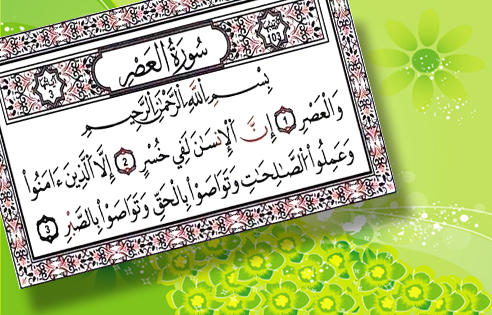
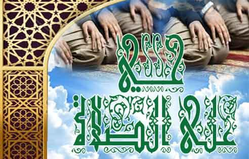
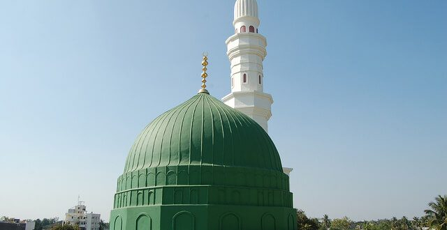
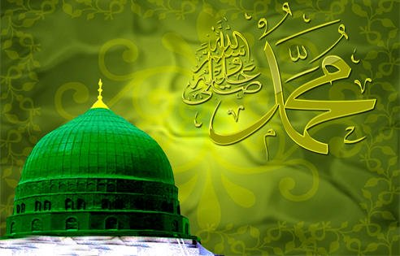
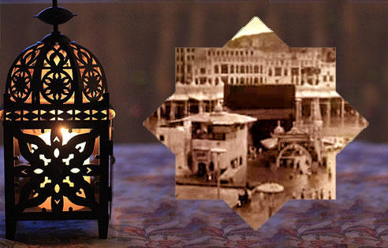
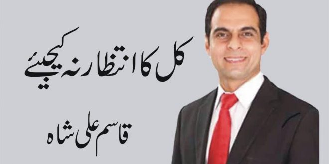

قرآن مجید اللہ تعالیٰ کا کلام ہے ۔ یہ اللہ تعالیٰ کی آخری کتاب ہے اور رہتی دنیا تک کے لیے معجزہ ہے۔ یہ دنیا میں سب سے زیادہ پڑھی جانے والی کتاب ہے۔ قرآن کریم اسلامی تعلیمات کا اولین ماخذ ہے۔ یہ ایک ایسی کتاب ہے جس کی مثل کوئی کتاب نہیں۔ اس کی فصاحت، بلاغت ، اندازِ بیان، اسلوب اور نظم و ترتیب میں کوئی شک و شبہ کی گنجائش نہیں۔ یہ کتاب ہر لحاظ سے بے مثل ہے ۔ نزولِ قرآن کے وقت عرب میں بے شمار فصیح اللسان خطیب و شاعر تھے ۔ انہوں نے اپنی زبان دانی پر ناز کرتے ہوئے یہ الزام لگایا کہ یہ آسمانی کتاب نہیں ہے بلکہ محمد مصطفی صلی اللہ علیہ وسلم نے خود ہی بنالی ہے۔ اس کے جواب میں اللہ تعالیٰ نے کفار کو چیلنج کیاکہ اگر یہ واقعی کسی بشر کی کتاب ہے تو تم بھی ایسی دس سورتیں لے آؤ کیونکہ انسان اگر ایسا کلام بناسکتا ہے تو اس کے مثل بنانا تمہاری طاقت سے باہر نہ ہوگا، تم بھی عربی ہو، فصیح و بلیغ ہو، کوشش کرو ۔ اگر تم اس بات میں سچے ہو کہ یہ کلام انسان کا بنایا ہوا ہے تو اللہ رب العزت کے سوا جو مل سکیں سب کو اپنی مدد کے لیے بلالو۔ چنانچہ ارشاد باری تعالیٰ ہے: ’’کیا یہ کہتے ہیں : یہ قرآن نبی نے خود ہی بنالیا ہے۔ آپ فرمادیجیے :(اگر یہ بات ہے ) تو تم (بھی)ایسی بنائی ہوئی دس سورتیں لے آؤ اور اپنی مدد کے لیے اللہ کے سوا جس کو بلاسکتے ہو بلالو اگر تم سچے ہو‘‘۔ (سورۃ الھود: 13)۔ یہ چیلنج صرف ایک مرتبہ نہیں بلکہ قرآن مجید میں چار مختلف مقامات پر مختلف انداز سے چیلنج کیا گیا۔ ایک مقام پر تو معترضین کو یہاں تک کہا گیا کہ اگر اپنے ساتھ پوری دنیا کے انسانوں اور جنات کو بھی ملالو تو پھر بھی اس قرآن کی مثل نہیں لاسکتے۔ ارشادِ باری تعالیٰ ہے: ’’فرمادیجیے : اگر تمام انسان اور جنات مل کر اس جیسا قرآن لانا چاہیں تو نہیں لاسکتے اگر چہ وہ ایک دوسرے کے مددگار بن جائیں‘‘۔(سورۃ بنی اسرائیل: 88ٌ) ۔ پھر اس چیلنج کو مزید ووسعت دی گئی ۔ نیا چیلنج اس انداز سے کیا گیا کہ پورا قرآن چھوڑو اگر تمہیں اپنی بیان دانی اور فصاحت پر ناز ہے تو پوری دنیا کے لوگوں کو ساتھ ملا کراس جیسی صرف ایک ہی سورت لے آؤ۔ چنانچہ ارشادِ باری تعالیٰ ہے: ’’اور اگر تمہیں اس کتاب کے بارے میں کوئی شک ہو جو ہم نے اپنے خاص بندے پرنازل کی ہے تو تم اس جیسی ایک سورت بنالاو اور اللہ کے علاوہ اپنے سب مددگاروں کو بلالو اگر تم سچے ہو‘‘۔(سورۃ البقرۃ: 23)۔ اسی طرح ایک اور آیت میں اس چیلنج کو دہرا یا گیا: ’’کیا وہ یہ کہتے ہیں کہ اس (نبی)نے اسے خود ہی بنالیا ہے ؟ تم فرماؤ:تو تم (بھی)اس جیسی کوئی ایک سورت لے آؤ اور اللہ کے سوا جو تمہیں مل سکیں سب کو بلا لاؤاگر تم سچے ہو‘‘۔ (سورۂ یونس: 38)۔ جب کفار اس چیلنج سے عاجز آگئے تو ان کے سامنے بے مثل قرآن کے اعجاز کا اظہار اس انداز سے کیا گیا کہ اگرتم اس جیسا قرآن نہیںلاسکتے، یا اس جیسی دس سورتیں نہیں لاسکتے ، یا اس جیسی ایک بھی سورت نہیں لاسکتے توصرف ایک بات ہی لے آؤ۔ ارشاد ہوا: ’’ بلکہ وہ کہتے ہیں کہ اس نبی نے یہ قرآن خود ہی بنالیا ہے بلکہ وہ ایمان نہیں لاتے۔ اگر یہ سچے ہیں تو اس جیسی ایک بات تو لے آئیں۔‘‘ (سورۃ الطور: 33۔34) ۔ قرآن مجید میں چار مرتبہ مختلف انداز سے چیلنج کیا گیا جس کا مقصد یہ تھا کہ کفار کے اس الزام کا بطلان ظاہر ہوجائے اور مسلمانوں کے عقیدے اور ایمان کو پختگی حاصل ہو کہ یہ قرآن من جانب اللہ ہے اور کلام الٰہی ہے۔کفار کے اعتراض کا باربارشدو مد کے ساتھ بطلان کیا گیا۔ ایک اور مقام پر اللہ تعالیٰ نے دوسرے انداز سے قرآن کی عظمت کا اظہار فرمایا: ’’بے شک ہم نے اس ذکر (قرآن) کو نازل کیا ہے اور ہم ہی اس کے محافظ ہیں‘‘۔ (سورۃ الحجر: 9)اس آیت میں اللہ تعالی نے اپنی ذات کو جمع کے صیغہ کے ساتھ تعبیر فرمایا ہے حالا نکہ اللہ تعالی واحد ہے۔ اس کی تو جیہہ میں امام فخرالدین رازی لکھتے ہیں: ہرچند کہ یہ جمع کا صیغہ ہے لیکن بادشاہوں کا طریقہ یہ ہے کہ وہ اپنی عظمت کا اظہار کرنے کے لیے خود کو جمع کے صیغے سے تعبیر کرتے ہیں کیونکہ ان میں سے جب کوئی کام کرتا ہے یا کوئی بات کہتا ہے تو وہ یوں کہتا ہے کہ ہم نے یہ کام کیا یا ہم نے یہ بات کہی۔(تفسیر کبیر)۔ پیر کرم شاہ الازہری لکھتے ہیں:اس آیت میں تین مرتبہ ضمیر متکلم کا بیک وقت تکرار (انا۔ نحن۔ نزلنا) جس تاکید بالائے تاکید پر دلالت کر رہا ہے۔ وہ اہل علم سے مخفی نہیں اور ضمیریں بھی جمع متکلم کی استعمال ہوئیں جو نازل کرنے والے کی عظمت وکبریائی کا اظہار کر رہی ہیں۔ یعنی ہم جو سارے جہانوں کے خالق ومالک ہیں ہم جن کی فرمانروائی کا ڈنکا زمین و فلک، فرش و عرش پر بج رہا ہے ہم نے اس کو اتارا ہے اور ہم ہی اس کے نگہبان ہیں۔ اس میں کسی قسم کی تحریف یا کمی بیشی کا کوئی امکان نہیں۔ آج چودہ صدیاں گزرچکی ہیں لیکن دشمنان اسلام کی خواہشوں، کوششوں اور سازشوں کے باوجود ایک آیت میں بھی ردو بدل نہیں ہوسکا۔ ایک نقطہ کی کمی بیشی اور زیروزبر کا فرق بھی تو نہیں ہوا۔ آج بھی لاکھوں انسان اسے اپنے سینوں میں محفوظ کیے ہوئے ہیں۔ اگر خدانخواستہ سارے لکھے ہوئے قرآنی نسخے نایاب ہوجائیں تو پھر بھی یہ جوں کا توں محفوظ رہے گا۔ اگر کوئی جابر سے جابر حکمران اور کوئی بڑے سے بڑا عالم اسے پڑھتے ہوئے زیرکو زبر میں بدل دے تو سات آٹھ سال کا بچہ اسے ٹوک دے گا۔ آج دنیا میں کوئی ایسی کتاب نہیں جس کا مصنف یا جس کے ماننے والے اس کے متعلق یہ دعویٰ کرسکیں۔ مذہبی صحائف جو دنیا کی مختلف قوموں کی عقیدت کا مرکز ہیں۔ ان کے ماننے والوں کا بھی یہ دعوی نہیں کہ ان کے مذہبی صحیفے ہر قسم کے ردوبدل سے پاک ہیں۔ صرف قرآن کریم کا یہ دعویٰ ہے کہ باطل اس میں کسی جانب سے داخل نہیں ہوسکتا۔ اور ان چودہ صدیوں کے طویل عرصہ میں اسلام کا کوئی بدترین بدخواہ بھی یہ ثابت نہیں کرسکا کہ اس میں کوئی تحریف ہوئی ہو، یورپ کے مستشرقین جنہوں نے اپنے وسیع علم، بے عدیل ذہانت اور طویل عزیز عمریں قرآن کے اس دعوے کو غلط ثابت کرنے کے لیے صرف کیں، وہ بھی آخر کار یہ ماننے پر مجبور ہوگئے کہ یہ کتاب ہر قسم کی تحریف اور تغیر سے پاک ہے۔ میور( (MUIRسے زیادہ دشمن اسلام کون ہوگا۔ اسلام اور بانی اسلام کے خلاف اس کی زہر افشانیاں رسوائے عالم ہیں۔ اسے بھی یہ لکھنا پڑا (THERE IS PROBABLY IN THE WORLD NO OTHER BOOK WHICH HAS REMAINED TWELVE CENTURIES WITH SO PUREATEXT.) یعنی اغلبا دنیا میں قرآن کے علاوہ کوئی ایسی اور کتاب نہیں جس کا متن بارہ صدیوں تک ہر قسم کی تحریف سے یوں پاک رہا ہو۔(ضیاء القرآن) قرآن کی حفاظت کی ذمہ داری اللہ تعالیٰ نے خود اپنے اوپر لے رکھی ہے۔ اس لیے اس میں کسی قسم کے ردو بدل یا اس کا کوئی حصہ ضائع ہونے کا اندیشہ باقی نہیں رہتا ۔ نہ اس میں کوئی چیز شامل کی جاسکتی ہے اور نہ اس میں سے کوئی چیز ختم کی جاسکتی ہے۔ قرآن آج بھی ویسا ہی ہے جیسا حضور نبی کریم صلی اللہ علیہ وسلم پر نازل ہوا تھا۔ چودہ سو سال سے زیادہ کا وعرصہ گزرنے کے باوجود اس میں ایک حرف کی تبدیلی بھی نہیں ہوئی۔ ایک وصف اللہ تعالیٰ نے بیان فرمایا کہ ’’لاریب فیہ‘‘ اس میں کوئی شک نہیں ہے۔ آیت کے اس حصے میں قران مجید کا ایک وصف بیان کیاگیا کہ یہ ایسی بلند شان اور عظمت و شرف والی کتاب ہے جس میں کسی طرح کے شک و شبہ کی کوئی گنجائش نہیں کیونکہ شک اس چیز میں ہوتا ہے جس کی حقانیت پر کوئی دلیل نہ ہو جبکہ قرآن پاک اپنی حقانیت کی ایسی واضح اور مضبوط دلیلیں رکھتا ہے جو ہر صاحب انصاف اورعقلمند انسان کو اس بات کا یقین کرنے پر مجبور کردیتی ہیں کہ یہ کتاب حق ہے اور اللہ تعالی کی طرف سے نازل ہوئی ہے ،تو جیسے کسی اندھے کے انکار سے سورج کا وجود مشکوک نہیں ہوتا ایسے ہی کسی بے عقل مخالف کے شک اور انکار کرنے سے یہ کتاب مشکوک نہیں ہوسکتی۔(صراط الجنان)دنیا کی ہر کتاب میں کہیں نہ کہیں کسی نہ کسی جگہ سے کوئی خطاء اور کوئی غلطی اور کوئی تعارض اور تضاد واقع ہوجاتا ہے صرف اللہ کی کتاب قرآن مجید ایسی کتاب ہے جس میں کسی وجہ سے کہیں کوئی اختلاف اور تضاد نہیں ہے۔قرآن مجید جا بجا غورو تدبر کرنے اور اس کے احکامات پر عمل کرنے کی دعوت دیتا ہے۔ حضور نبی کریم صلی اللہ علیہ وسلم نے بھی قرآن مجید کی پیروی کا حکم دیا ہے۔ چنانچہ آپ صلی اللہ علیہ وسلم نے فرمایا: بے شک اللہ تعالیٰ اس کتاب کی پیروی کے ذریعے کچھ لوگوں کو بلندی عطافرماتا ہے اور اس کی خلاف ورزی کرنے پر بعض لوگوں کو گراتاہے۔(مسلم :817)۔ حقیقت بھی یہی ہے کہ مسلمان جب تک قرآنی تعلیمات و ہدایات پر عمل پیرا رہے وہ دنیا میں غالب اور سربلندرہے۔ انہوں نے دنیا کے بہت بڑے حصے پر حکومت کی اور دنیا کو اعلیٰ تہذیب و تمدن اور بہترین نظام زندگی دیا۔ قرآن کریم آج بھی زندہ معجزہ ہے۔ مسلمان آج بھی اس کی تعلیمات پر عمل کرکے اپنا کھویا ہوا مقام اور وقار دوبارہ حاصل کرسکتے ہیں۔
آج ہمارا معاشرہ جن برائیوں میں گھرا ہوا ہے ،اُس میں ضرورت ہے کہ سورۃ العصر سے رہنمائی حاصل کرکے اسلامی عقائد کو اپنایا جائے
اللہ تبارک وتعالیٰ نے حضرت انسان کی رہنمائی کے لئے اپنی آخری نبی ورسول ﷺ کو جامع دستورِ حیات عطا فرمایا ،جو صرف اہلیان ِ اسلام کے لئے دستورِ حیات ہی نہیں بلکہ شان والے نبی ﷺ پر نازل ہونے والا عظیم الشان معجزہ بھی ہے ،جو قیام ِقیامت تک بنی نوع انسان کے لئے نشانِ منزل ہدایت اور جدید ایجادات کی راہ سجھانے والی کتاب یعنی قرآن الکریم ہے ۔
اس وقت مجموعی صورت حال اہلیان اسلام کی کچھ یوں ہے کہ قرآن کریم کا مطالعہ بغیر سمجھے کرتے ہیں یا قرآن کریم کا مطالعہ اپنے مسلک ونظریہ کو ثابت کرنے کے لئے کیا جاتا ہے یا پھر قرآن کریم کو چوم کر الماری میں واپس رکھ دیا جاتا ہے ،الا قلیل لوگ کہ ابھی کچھ دیوانگانِ عشق ایسے باقی ہیں جو قرآن کریم کو سمجھ کر اس پر عمل کرنے کی سعی کرتے ہیں اور انہیں عشاقِ قرآن کی برکت سے یہ کائنات ہستی کا وجود باقی ہے ۔
اس وقت مسلمان بحیثیت ایک قوم کے ذلالت کے گڑھے میں گری ہوئی ہے ،لیکن جب ہم سورۃ العصر کا معانی ومفاہیم وتفسیر کے ساتھ مطالعہ کرتے ہیں تو معلوم ہوتا ہے کہ اگر آج کی مسلم امہ صرف سورت العصر پر عمل پیرا ہوجائے تو بھی بہت جلدزوال کی شب ِ تاریک سے نکل مسند ِ عزت وعروج پاسکتی ہے ،سب سے پہلے ایک بار
’’اور قسم کے زمانہ کی ،بے شک انسان خسارے میں ہے ،مگر وہ لوگ جو ایمان لائے اور عمل صالح کیے ،(وہ ایک دوسرے کو) حق کی طرف رغبت کرنے اور صبر کرنے کی بھی وصیت کرتے ہیں‘‘۔
یہاں یہ امر لائق تو جہ ہے کہ زمانہ کی قسم کیوں اٹھائی گئی جب کہ فی زمانہ فحاشی وعریانی عام ہے ،جھوٹ کا بازار گرم ہے اور خاص کر ہمارے تھانہ کچہری کا کلچرہی جھوٹ وفریب پر مبنی ہے ،اغواء برائے تاوان وجنسی خواہشات کی تکمیل ،بھتہ خوری،گھریلو جھگڑے ،قتل وغارت گری ،طلاق کی بڑھتی شرح ،جسم فروشی وہم جنس پرستی کے بڑھتے واقعات یہ سب فی زمانہ عام ہیں اور کسی سے ڈھکے چھپے ہوئے نہیں تو زمانہ کی قسم کیوں اٹھائی گئی ،اس لئے کہ زمانہ انسان پر گواہ ہے ،انسان اپنی حیات کے شب ِ وروز جس طرح گزارتا ہے ،دہر کی چلتی نبضیں اس کی رفتار خیر وشر کو نوٹ کرتی ہیں اور بروزِ حشر انسان کے حق یا خلاف کراماً کاتبین کی تحریریں ، انسان کے اپنے اجزاء جسم ،زمین ،اور دہر سب کے سب گواہی دیں گے اور پھر انسان بے ساختہ پکار اٹھے گا:اور زمین اپنے بوجھ کر نکال باہر کرے گی ،اور انسان کہے گا کہ اس کو کیا ہوا،اس دن وہ اپنی خبریں بیان کردے گی ۔(الزلزال2تا4)
بعض حضرات زمانہ کو برا کہتے ہیں حالانکہ زمانہ کو بر انہیں کہتے کیونکہ برے افعال کا سرزد ہونا یا نہ ہونا انسان سے ہے،زمانہ سے نہیں اور نہ ہی زمانہ ہمیں برے افعال پر یا برائی کی طرف راغب کرتا ہے بلکہ ہم انسان ہی اچھائی یا برائی کی طرف اپنی نفسانی خواہشات ، بری سوسائٹی ،الیکٹرانک میڈیا اور سوشل میڈیا کا برا استعمال ،انٹرنیٹ کا برا استعمال یہ سب ہم خود کرتے ہیں ،ورنہ آپ غور کریں کہ آج بھی دینی مدارس میں بڑے سے بڑے منصب پر فائز عالم دین یعنی شیخ الحدیث کی ماہانہ تنخواہ 15 سے20 ہزار تک ہی ہوتی ہے ،اب دیکھئے کہ مہنگائی کے اس دور میں وہ کس طرح گھر کی گاڑی چلائے اور کیسے نئے موضوعات پر شائع ہونی والی کتب خریدے تو یہ معاملہ انٹرنیٹ نے سہل کردیا ہے کہ نئی نئی کتب فری ڈائونلوڈ کرکے ان کا مطالعہ کیا جاسکتا ہے ،عربی ،فارسی ،انگریزی ،اردو اور دیگر زبانوں میں کثیر تعداد میں دینی وادبی لٹریچر موجو د ہے جس سے استفادہ کیا جاسکتا ہے ،یعنی چیزوں کا استعمال بذات خود اچھا یا بر انہیں ہوتابلکہ اُن کو استعمال کرنے والے پر منحصر ہے کہ وہ اس شئے کا اچھا استعمال کرتا ہے یا برا۔اس لئے زمانہ کو بر ا نہیں کہنا چاہیے۔
آگے فرمایاکہ :’’بے شک انسان خسارے میں ہے ‘‘ لفظ انسان لاکر تخصیص ختم کردی کہ کسی کے ذہن میں یہ نہ رہے کہ صرف کافر خسارے میں ہیں ،ہم نے کلمہ نبی آخرلزماں ﷺکا پڑھ لیا ہے ،اب ہم جو کچھ مرضی کرتے پھریں ،گویا کلمہ طیبہ ہمارے ہر کام کے لئے سرٹیفیکٹ ہے،ایسا نہیں ہے بلکہ لفظ انسان لاکر اس سوچ کی نفی فرمادی گئی ہے۔
آگے فرمایاکہ :’’بے شک انسان خسارے میں ہے ‘‘ لفظ انسان لاکر تخصیص ختم کردی کہ کسی کے ذہن میں یہ نہ رہے کہ صرف کافر خسارے میں ہیں ،ہم نے کلمہ نبی آخرلزماں ﷺکا پڑھ لیا ہے ،اب ہم جو کچھ مرضی کرتے پھریں ،گویا کلمہ طیبہ ہمارے ہر کام کے لئے سرٹیفیکٹ ہے،ایسا نہیں ہے بلکہ لفظ انسان لاکر اس سوچ کی نفی فرمادی گئی ہے۔
اُس صانع عالم کے علم ماکان ومایکون میں یہ بات روزِ اول سے تھی کہ انسان مجموعی لحاظ سے اس فانی دنیا میں جاکر عالم ارواح میں حق تعالیٰ سے کیے گئے معاہدے کوفراموش کردے گا ،اور فانی دنیا کی آرائش وآسائش میں ایسا گم ہوگا کہ وہ مقصد ِ تخلیق کو ہی بھول جائے گا ،اور دنیا کی بھول بھلیوں میں مختصر مہلت کے دن پورے کرکے ابدی طورنقصان اٹھائے گا،اور ابدی نقصان ہی درحقیقت ایسا خسارہ ہے کہ دنیا کا بڑے سے بڑا خسارہ اس کے بالمقابل کچھ حیثیت نہیں رکھتا، لیکن ایسا بھی نہیں کہ سارے انسان ہی خسارے میں ہیں ،اس لئے فوراً آگے فرمایا کہ :’’ مگر وہ لوگ جو ایمان لائے او ر انہوں نے نیک اعمال کیے ‘‘یہاں یہ بات ذہن میں رہے کہ جس طرح کلمہ طیبہ میں ہے کہ :۔لا الٰہ ، کہ کوئی معبود نہیں ،کوئی اس لائق نہیں کہ بنی نوع انسانی اس کے سامنے سر بسجود ہو،لیکن اس نفی کے فوراً بعد اثبات میں فرمایا کہ یہ نہ سمجھنا کہ تم بغیر کسی خالق ومالک وصانع کے خود بخود معرض وجود میں آگئے ہو ،اور تمہیں کسی کے سامنے بھی سر تسلیم خم نہیں کرنا بلکہ ایسا نہیں کیونکہ:۔الااللّٰہ،مگر اللہ ہے کہ اس کے سامنے سربسجود ہوا جائے گا،اس کی عبادت جسمانی و روحانی کی جائے گی ،اس کی صفات کو اسی طرح مانا جائے گا جس طرح محمد رسول اللّٰہ نے منوایا ہے ،بتایا ہے اور صحابہ کرام رضوان اللہ علیہم اجمعین کو سکھایا ہے ،اور صحابہ کرام رضوان اللہ علیہم اجمعین نے بعد والوں کو دین سکھایا ہے ۔توخیر بات ہورہی تھی کہ جب الاکہا تو معلوم ہوا کہ سب کی نفی نہیں بلکہ کوئی ذات ہے ،اسی طرح یہاں بھی اولاً جس طرح انسانوں کے خسارے کا بیان ہوا ،اس سے شک ہورہا تھا کہ ساری انسانیت ہی خسارے کا شکار ہوجائے گی ،لیکن حق تبارک وتعالیٰ نے ساتھ ہی لفظ الا لا کر انسانیت کو تسلی دیتے ہوئے فرمایا کہ سارے نہیں ،بلکہ صرف وہ جو ایمان نہ لائیں اور نیک اعمال نہ کریں۔
اسلام’’ اقرارٌ باللسان‘‘ کو کہاجاتا ہے یعنی زبان سے اقرار کرنااور ’’تصدیقٌ بالقلب‘‘یعنی ایمان دل کی تصدیق کو کہتے ہیں ، اور ایمان کو دوسرے لفظوں میں عقائد صحیحہ بھی کہاجاسکتا ہے ،یعنی ایک آدمی کارِ خیر کرے لیکن اس کے عقائد درست نہیں ،تو اس کے اعمال خیریہ کا بدلہ حق جل مجدہ دنیا میں ہی اسے عطا فرمادیں گے ،لیکن اگر اس بندے کے عقائد صحیحہ رکھتا ہے تو اس کے اعمال خیریہ اسے آخرت میں کام دیں گے ،اور اصل نفع ونقصان آخرت کا ہے ،جو روزِ محشر کامیاب ہوگیا ،وہ نفع مند ثابت ہوا،اور جو اس دن ناکام ہوا وہ خسارے میں گیا ۔
جس بندے کے عقائد، اسلامی عقائد کے مطابق ہوں اور وہ اعمال صالحہ پر بھی کار بند ہو،ایسے لوگوں کو مزید حکم ہے کہ لوگوں کو حق کی طرف دعوت بھی دیں ،کہ وہ بھی حق کو قبول کریں ،اور قبول حق میں مشکلات ومصائب کا آنا لازمی حصہ ہے ،اس لیے قبول حق کرنے والے حضرات مشکلات ومصائب میں گھبر ا نہ جائیں بلکہ دین اسلام کی خاطر آنے والے مشکلات ومصائب پر صبر کریں ،کیونکہ اس صبر کی جزا جنت ہے ،صبر کا مفہو م یہ نہیں ہے کہ دوسرے کے ظلم وزیادتی کو خاموشی سے برداشت کیا ،بلکہ یہ ہے کہ اپنا حق گنوا کر بھی زبان سے کوئی جملہ شکایت ادا نہ کیا ۔
س:رجب کے مہینے میں ہمارے ملک میں لوگ معراج شریف کی یاد منانے کیلئے روزہ رکھتے ہیں جبکہ بعض لوگ اس ماہ میں دیگر چند اور ناموں سے بھی کچھ ایام کے روزے رکھتے ہیں۔سوال یہ ہے کہ کیا رجب میں یہ روزے مسنون ہیں؟
ج:اگر اسلام کے اصولی اموراور احکامات کو پیش نظر رکھ کراپنے گرد و پیش کا جائزہ لیں تو ہمیں معلوم ہوگا کہ سینکڑوں ایسے اعمال ہیں جنہیں اسلا م کے نام لیواؤں نے دین کا حصہ بنا رکھا ہے حالانکہ کتاب و سنت ، تعامل ِ صحابہ ؓ اور علمائے امت سے ان کا ثبوت نہیں ملتا۔ان خود ساختہ عبادات میں ماہ رجب کے روزے بھی شامل ہیں۔ ان خود ساختہ روزوں میں کسی کو ’’معراج شریف ‘‘کا روزہ کہا جاتا ہے، کسی کو’’ مریم روزہ‘‘ کا نام دیتے ہیں ، کسی کو’’ ہزاری روزہ‘‘ اور کسی کو’’ لکھی روزہ‘‘ کہا جاتا ہے حالانکہ یہ روزے نہ تو نبی ﷺ نے خود رکھے اور نہ ہی ان کا حکم فرمایا یا ترغیب دلائی بلکہ اِس کے بر عکس ایک ضعیف سند والی روایت میںہے کہ’’نبی ﷺ نے رجب کے روزے رکھنے سے منع فرمایاہے ‘‘(سنن ابن ماجہ )نبی ﷺ کی طرف منسوب اس روایت کی سند تو ضعیف ہے لیکن مصنف ابن ابی شیبہ میں ایک صحیح روایت ہے جس سے مذکورہ حدیث کے مفہوم کی تائید ہوتی ہے کہ حضرت عمرفاروق ؓ اگر ماہ ِ رجب میں لوگوں کو روزہ رکھتے ہوئے دیکھتے تو ان کے سامنے کھانے کا برتن رکھ کر اُن کے ہاتھوں پر اپنے کوڑے سے چوٹیں مارتے اور فرمایا کرتے تھے ’’کھاؤ ،اس مہینے کی ایسی تعظیم تو جاہلیت کا شیوہ ہے ‘‘ ( ارواء الغلیل) ظاہر ہے کہ حضرتِ عمرفاروقؓ ان خود ساختہ یا عہد ِ جاہلیت کی یاد تازہ کرنے والے روزوں کی ممانعت فرمارہے ہیں ورنہ اگر کوئی شخص ہر دوسرے دن کا روزہ رکھنے والوں میں سے ہو ، جسے ’’صوم داؤدی‘‘ کہا جاتا ہے تو وہ حسب ِ عادت روزہ رکھ سکتا ہے۔ایسے ہی سال بھر ایام بیض یعنی چاند کی 13، 14اور15 تاریخ کے روزے رکھنے والا شخص بھی یہ روزے رکھ سکتا ہے کیونکہ یہ روزے مسنون ہیںاور ہر ہفتہ میں پیر اور جمعرات کے دو روزے بھی نبی ﷺ کا معمول تھے۔ ان کے علاوہ اگر کوئی شخص اپنی طرف سے یا ’’بزرگوں نے فرمایا ‘‘ جیسی سند سے بیان کردہ روزے رکھتا ہے تو وہ بدعات میں شمار ہونگے ۔ان کا نام’’ لکھی ‘‘رکھیں یا ’’ہزاری‘‘اور انہیں ’’مریم روزہ‘‘ کا نام دیں یا ’’معراج کا روزہ‘‘ کہیں ،نبی ﷺ ،خلفائے راشدینؓ و صحابہ کرامؓ،ائمہ اربعہؒ اور علمائے دین سے یہ ہرگز ثابت نہیں۔
س:بعض لوگ ماہ ِ رجب کی پہلی جمعرات اور جمعہ کی درمیانی شام مغرب وعشاء کے ما بین 12رکعتوں پر مشتمل نماز پڑھتے ہیں جس میں ہر دو رکعتوں کے بعد سلام پھیرا جاتا ہے ،ہر رکعت میں ایک دفعہ سورۂ فاتحہ ،3 دفعہ سورہ قدر اور 12مرتبہ سورہ اخلاص پڑھی جاتی ہے۔ کہا جاتا ہے کہ نماز سے فارغ ہوکر 70 مرتبہ درود شریف پڑھیں اور پھر سجدہ میں گِر کر70 مرتبہ (سُبُّوْحٌ قُدُّوْسٌ رَبُّ الْمَلَائِکَۃِ وَ الرُّوْحِ)،پھر سجدہ سے سر اُٹھا کر70 مرتبہ (رَبِّ اغْفِرْ وَارْحَمْ وَتَجَاوَزْ عَمَّا تَعْلَمْ اِنَّکَ أَنْتَ الْأَعَزُّالْأَکْرَمُ) اور پھردوسرے سجدہ میں بھی پہلے کی طرح ہی کریں ۔اس نماز کی کیا حقیقت ہے؟
ج:اس خود ساختہ نماز کو ’’صلاۃ الرغائب ‘‘ کہا جاتا ہے اور کئی موضوع و من گھڑت روایتیں بیان کر کے اس نماز کی فضیلتوں کے پل باندھے جاتے ہیں جنہیں سن کر علم دین سے بے بہرہ اور اصلی و نقلی کی پہچان سے لا پروا لوگ حصول ِ ثواب کے لئے کشاں کشاں چلے آتے ہیں حالانکہ البدایہ و النہایہ میں معروف مفسرو محدث امام ابن کثیر ؒ کے بقول یہ نماز قطعاً بے ثبوت ہے۔ علامہ عراقی نے احیاء علوم الدین للغزالی کی تخریج میں مذکورہ نماز والی حدیث کو موضوع یعنی من گھڑت قرار دیا ہے۔شیخ الاسلام ابن تیمیہ ؒ اس نماز کے بارے میں فرماتے ہیں کہ’’نبی اکرم ﷺ ، صحابہ کرام ؓ، تابعین ،ائمہ دین اورعلماء سلف رحمہم اللہ میں سے کسی سے بھی اس نماز کا ثبوت نہیں ملتااور نہ خاص ماہ ِ رجب کی پہلی جمعرات وجمعہ کی درمیانی شب کی فضیلت کسی حدیث ِ صحیح میں وارد ہوئی ہے اور اس کے بارے میں جو ایک روایت بیان کی جاتی ہے، وہ علم حدیث کی معرفت رکھنے والے علماء و محدثینِ کرام کے نزدیک جھوٹی اور من گھڑت ہے ( الابداع )
اِس صلوٰۃ الرغائب کے بارے میں دیگر فقہی مکاتب ِ فکر اور محدثین و مجتہدین کی طرح حنفی مکتب ِ فکر سے تعلق رکھنے والے علماء بھی خوش فہم نہیںبلکہ فقہ حنفیہ کی کتب میں بھی کھل کر اسے جعلی و من گھڑت اور بدعت قرار دیاگیا ہے چنانچہ حاشیہ الاشباہ للحموی سے نقل کرتے ہوئے معروف و متداول کتاب ردّ المحتار حاشیہ درِّ مختار کی جلد اول ص544 پر صلوٰۃ الرغائب کے بارے میں لکھا ہے ’’یہ نماز 480ھ کے بعد ایجاد ہوئی اور علماء نے اس کے انکار و مذمت اور اسے ادا کرنے والوں کے احمق پن پرکئی کتابیں لکھی ہیں۔ کثیر شہروں میں اسے ادا کرنے والوں کی کثرت سے دھوکہ نہ کھایا جائے ‘‘اور آگے چل کر ص660 پر لکھا ہے ’’ اور اسی لئے اہل ِ علم نے اس نماز ’’ صلوٰۃ الرغائب ‘‘ کے لئے جمع ہونے سے منع کیا ہے جسے بعض جاہل عابدوں نے ایجاد کیا ہے کیونکہ اس مذکورہ کیفیت کے ساتھ مخصوص راتوں میں ایسی کوئی نماز ماثور یا ثابت نہیںاگرچہ بذاتہ نماز تو اچھا عمل ہے ‘‘ علاوہ ازیں بعض دیگر مکاتب ِ فکر سے تعلق رکھنے والے علماء کے اقوال و ارشادات سے بھی مذکورہ نماز کے بے اصل ہونے کا پتہ چلتا ہے ، مثلاً : حافظ ابن الجزری ؒ نے ’’ الحصن الحصین ‘‘ میں اس نماز والی روایت کے بارے میں کہا ہے ’’یہ صحیح نہیں اور اس کی سندمن گھڑت اور باطل ہے ‘‘ شارح مسلم امام نووی ؒ اپنی ایک دوسری کتاب ’’ المجموع شرح المہذب ‘‘ میں فرماتے ہیں ’’صلوٰۃالــرغائب کے نام سے معروف نماز جو ماہِ رجب کے پہلے جمعہ کی رات کو مغرب و عشاء کے مابین12 رکعتیں پڑھی جاتی ہیں اور15شعبان کی رات کو 100 رکعتوں پر مشتمل ایک نماز پڑھی جاتی ہے۔ یہ دونوں نمازیں منکر ترین بدعت ہیںاور کتاب ’’ قوت القلوب ‘‘ اور ’’احیاء علوم الدین ‘‘ میں ان نمازوں کے مذکورہ ہونے سے دھوکہ نہیں کھانا چاہئے۔
ان نماز وں کے بارے میں بیان کی جانے والی احادیث سے بھی دھوکہ نہیںکھانا چاہئے، یہ سب باطل ہیں اور ائمہ علم میں سے ایک صاحب پر ان نمازوں کی شرعی حیثیت مشتبہ ہوگئی اور انہوں نے چند اوراق پر مشتمل ایک رسالہ بھی لکھ مارا اور اُس میں ان نمازوں کا استحباب ذکر کردیا ۔
اُس رسالہ سے بھی دھوکہ نہ کھایا جائے ۔ اس میں انہوں نے مغالطہ سے کام لیا ہے اور شیخ الاسلام ابو محمد عبد الرحمن بن اسماعیل المقدسی نے ان کے ردّ میں ایک نفیس کتاب لکھی ہے جس میں بڑے عمدہ طریقے سے ان کا بطلان ثابت کیا ہے ‘‘(المجموع شرح المہذب )
اسی خود ساختہ نماز کے بارے میں امام طرطوشی نے امام المقدسی سے بیان کرتے ہوئے لکھاہے’’ہمارے یہاں بیت المقدس میں یہ نماز ’’صلوٰۃ الرغائب ‘‘ نہیں پڑھی جاتی تھی جو کہ رجب میں پڑھی جاتی ہے اور نہ ہی 15 شعبان کی نماز مروّج تھی اور یہ شعبان والی نماز تو 448ھ میں ایجاد ہوئی ہے ‘‘( بحوالہ الابداع ) ایسے ہی کئی دیگر محققین علماء نے اس صلوٰۃ الرغائب کو غیر مستحب بلکہ مکروہ و منکر بدعت قرار دیاہے ۔
ماہ ربیع الاول میں بروز سوموار آپ صلی اللہ علیہ وسلم کی پیدائش ہوئی اور جہاں تک تاریخ کی بات ہے تو اس مسئلہ میں مورخین کے یہاں اختلاف ہے راجح قول یہ ہے کہ ربیع الاول کی 9 تاریخ کو آپ کی پیدائش ہوئی ، آپ صلی اللہ علیہ وسلم کی ولادت سے قبل ہی آپ کے والد کا انتقال ہوچکا تھا ، پیدائش کے بعد ابولہب کی لونڈی ثوبیہ نے آپ کو چند دنوں تک دودھ پلایا پھر حلیمہ سعدیہ نے تقریباً 4 سال تک آپ کو دودھ پلانے کا شرف حاصل کیا اور جب شق صدر کا واقعہ پیش آیا تو حلیمہ سعدیہ نے خوف کے مارے آپ صلی اللہ علیہ وسلم کو ان کی والدہ کے حوالے کر دیا۔ جب آپ کی عمر 6 سال کی ہوئی تو اپنی والدہ آمنہ بنت وہب کے ساتھ اپنے ننہیال مدینہ گئے واپسی میں مقام ابواء پر والدہ انتقال کر جاتی ہیں اس کے بعد موروثہ لونڈی ام ایمن نے آپ کی پرورش کی ، اور آپ صلی اللہ علیہ وسلم کے دادا عبدا لمطلب نے کفالت کی جب آپ صلی اللہ علیہ وسلم کی عمر 8 سال کی ہوتی ہے آپ کے دادا کی وفات ہو جاتی ہے جنہوں نے وفات کے وقت آپ کے چچا ابو طالب کو کفالت و تربیت کی وصیت کی ، اور جب آپ صلی اللہ علیہ وسلم کو نبوت سے سرفراز کیا گیا تو! ابو طالب نے آپ صلی اللہ علیہ وسلم کی خوب مدد کی لیکن ایمان نہیں لائے ان کی اس تائید و نصرت کی وجہ سے قیامت کے دن انہیں ہلکا عذاب دیا جائے گا۔
اللہ رب العالمین نے آپ صلی اللہ علیہ وسلم کو ہر قسم کی برائی سے محفوظ رکھا اور اعلی اخلاق پر فائز کیا آپ بچپن ہی سے صادق و امین کے لقب سے مشہور تھے اسی لئے جب قریش کے مابین تعمیر کعبہ کے وقت حجر اسود کو نصب کرنے میں تنازعہ ہوا اور یہ فیصلہ ہوا کہ جو سب سے پہلے کعبہ میں داخل ہو گا وہی اس کا حقدار ہو گا تو آپ صلی اللہ علیہ وسلم جن کی عمر اس وقت 35 سال تھی سب سے پہلے داخل ہوئے جس پر سب نے بیک زبان کہا: یہ امین ہیں ہم ان سے راضی ہیں پھر آپ نے حجر اسود کو ایک کپڑے میں رکھ کر سرداران قبائل کو کپڑے کا ایک ایک کنارہ پکڑنے کا حکم دیا پھر آپ صلی اللہ علیہ وسلم نے اپنے مبارک ہاتھوں سے حجر اسود کو اس کی جگہ پر رکھ دیا (مسند احمد ، حاکم)
نام محمد عبداللہ بن عبد المطلب بن ہاشم بن عبد مناف اور کنیت ابو القاسم تھی بخاری و مسلم میں جبیرن مطعم رضی اللہ عنہ سے مروی ہے کہ آپ صلی اللہ علیہ وسلم نے فرمایا: میرے بہت سے نام ہیں ، میں محمد احمد ہوں ، ماحی (کفر کو مٹانے والا) حاشر (لوگوں کو اکٹھا کرنے والا) اور عاقب یعنی آخری نبی ہوں۔ آپ صلی اللہ علیہ وسلم کا نسب سب سے پاکیزہ ، اعلی و ارفع ہے ، واثلہ بن الاسقع رضی اللہ عنہ روایت کرتے ہیں کہ اللہ کے رسول صلی اللہ علیہ وسلم نے فرمایا: اللہ عز و جل نے ابراہیم(علیہ السلام) کی نسل سے اسماعیل(علیہ السلام) ، بنی اسماعیل سے کنانہ ، بنی کنانہ سے قریش ، قریش سے بنو ہاشم ، اور بنو ہاشم سے مجھے منتخب کیا (مسلم) اور جب ہرقل (روم کا بادشاہ) نے ابو سفیان سے اللہ کے رسول صلی اللہ علیہ وسلم کے نسب کے بارے میں سوال کیا تو جواب دیا کہ: وہ ہم میں سب سے اعلیٰ نسب والے ہیں ، ہرقل نے کہا: انبیاء و رسل ایسے ہی ہوتے ہیں۔ 
یَا صَاحِبَ الجَمَالِ وَ یَاسَیِّدََالبَشَرْ
مِنْ وَجْہِکَ الْمُنِیْرِ لَقَدْ نُوِّرَ الْقَمَرْ
لَا یُمْکِنُ الثَّنَائُ کَمَا کَانَ حَقَّہ
بعد از خدا بزرگ توئی قصہ مختصر
اے صاحب جمال کل اے سرورِ بشر
رْوئے منیر سے ترے روشن ہوا قمر
ممکن نہیں کہ تیری ثنا کا ہو حق اَدا
بعد از خدا بزرگ توہے قصہ مختصر
سیّدنا محمد صلی اللہ علیہ وسلم بن عبد اللہ بن عبد المطلب بن ہاشم۔
ابو القاسم۔
آمنہ بنت وہب۔
بروز پیر12ربیع الاوّل عام الفیل۔
وَالد ماجد کا اِنتقال وِلادت سے قبل ہی بحالتِ سفر مدینہ منورَہ میں ہوچکا تھا۔ آپ صلی اللہ علیہ وسلم کی کفالت آپ صلی اللہ علیہ وسلم کے دادا عبد المطلب نے کی اورسیدہ حلیمہ سعدیہؓ نے دودھ پلایا۔ پھر آپ صلی اللہ علیہ وسلم کی عمر مبارک6 سال کی ہوئی تو آپ صلی اللہ علیہ وسلم کی والدہ ماجدہ آپ صلی اللہ علیہ وسلم کو مدینہ آپ صلی اللہ علیہ وسلم کے ننہال لے گئیں۔ واپسی میں بمقامِ ابوا اْن کا انتقال ہوا اور آپ صلی اللہ علیہ وسلم کی پرورش اْمّ ایمن کے سپرد ہوئی۔ 8 سال کے ہوئے تو دادا کا سایہ بھی سر سے اْٹھ گیا، کفالت کا ذمہ آپ صلی اللہ علیہ وسلم کے چچا ابو طالب نے لیا۔ 9سال کی عمر میں چچا کے ساتھ شام کا سفر فرمایا اور25سال کی عمر میں شام کا دوسرا سفر حضرت خدیجۃ الکبریٰ رضی اللہ عنہا کی تجارت کے سلسلہ میں فرمایا اور اس سفر سے واپسی کے 2ماہ بعد حضرت خدیجۃ الکبریٰ رضی اللہ عنہا سے عقد ہوا۔ 35 سال کی عمر میں قریش کے ساتھ تعمیرِ کعبہ میں حصہ لیا اور پتھر ڈھوئے۔حجرِ اسود کے بارے میں قریش کے اْلجھے ہوئے جھگڑے کا حکیمانہ فیصلہ فرمایا جس پر سبھی خوش ہوگئے۔
آپ صلی اللہ علیہ وسلم یتیم پیدا ہوئے تھے اور ماحول و معاشرہ سارا بت پرست تھا مگر آپ صلی اللہ علیہ وسلم بغیر کسی ظاہری تعلیم و تربیت کے نہ صرف ان تمام آلائشوں سے پاک صاف رہے بلکہ جسمانی ترقی کے ساتھ ساتھ عقل و فہم اور فضل و کمال میں بھی ترقی ہوتی گئی یہاں تک کہ سب نے یکساں و یک زبان ہوکر آپ صلی اللہ علیہ وسلم کو صادق و امین کا خطاب دیا۔ مری مشّاطگی کی کیا ضرورت حسنِ معنی کو کہ فطرت خود بخود کرتی ہے لالہ کی حنا بندی
بچپن میں رسول اللہ صلی اللہ علیہ وسلم نے چند قیراط پر اہلِ مکہ کی بکریاں بھی چرائیں مگر بعد میں آپ صلی اللہ علیہ وسلم کو خلوت پسند آئی چنانچہ غارِ حرا میں کئی کئی راتیں عبادت میں گزر جاتیں۔ نبوت سے پہلے آپ صلی اللہ علیہ وسلم سچے خواب دیکھنے لگے، خواب میں جو دیکھتے ہو بہو وہی ہوجاتا۔
حضورِ اکرم صلی اللہ علیہ وسلم کی سیرتِ طیبہ کا ہر پہلو نرالا اور اْمت کے لیے مینارِ ہدایت ہے،اگرچہ آپ صلی اللہ علیہ وسلم کا تشریعی دورنبوت کے بعد شروع ہوتا ہے لیکن اس سے پہلے کا دور بھی چاہے بچپن کا دور ہو یا جوانی کا اْمت کے لیے اس میں ہدایت موجود ہے۔ آپ صلی اللہ علیہ وسلم کے دودھ پینے کا زمانہ ہے لیکن اتنی چھوٹی عمر میں بھی آپ صلی اللہ علیہ وسلم کو عدل و انصاف پسند ہے اور آپ صلی اللہ علیہ وسلم دوسروں کا خیال فرماتے ہیں۔حضرت حلیمہ سعدیہ رضی اللہ عنہا ایک طرف کا دودھ پلاکر دوسری طرف پیش فرماتی ہیں لیکن آپ صلی اللہ علیہ وسلم اسے قبول نہیں فرماتے کیونکہ وہ آپ صلی اللہ علیہ وسلم کے دودھ شریک بھائی کا حق ہے۔ آپ صلی اللہ علیہ وسلم کوبچپن سے اجتماعی کاموں میں اتنا لگاؤ اور دلچسپی ہے کہ جب بیت اللہ شریف کی تعمیر ہورہی تھی تو آپ صلی اللہ علیہ وسلم بھی قریشِ مکہ کے ساتھ پتھر اٹھاکر لا رہے ہیں۔ اور شرم وحیاء اتنی غالب ہے کہ جب آپ صلی اللہ علیہ وسلم کے چچا حضرت عباس رضی اللہ عنہ دیکھتے ہیں کہ آپ صلی اللہ علیہ وسلم ننگے کندھے پر پتھر اْٹھاکر لارہے ہیں تو ترس کھاتے ہوئے آپ صلی اللہ علیہ وسلم کا تہ بند کھول کر کندھے پر رکھ دیا۔ آپ صلی اللہ علیہ وسلم شرم کے مارے بے ہوش ہوکر گر پڑے، یہ فرماتے ہوئے کہ میری چادر مجھ پر ڈال دو۔ کسب حلال کی یہ اہمیت کہ قریش کی بکریاں چراتے اور اس کی مزدوری سے اپنی ضروریات پوری فرماتے اور جب اور بڑے ہوئے تو تجارت جیسا اہم پیشہ اختیار فرمایا اور’’ التاجر الصدوق الامین ‘‘(امانت دار سچے تاجر) کی صورت میں سامنے آئے۔ معاملہ فہمی اور معاشرے کے اختلافات کو ختم کرنے اور اس میں اتحاد و اتفاق پیدا کرنے کی وہ صلاحیت ہے کہ بیت اللہ کی تعمیر کے وقت حجرِ اسود کو اپنی جگہ رکھنے پر قریش کی مختلف جماعتوں میں اختلاف پیدا ہوا اور قریب تھا کہ ناحق خون کی ندیاں بہہ جاتیں لیکن آپ صلی اللہ علیہ وسلم نے ایسا فیصلہ فرمایا جس کی سب نے تحسین کی اور اس پر راضی ہوگئے۔ صداقت و امانت کے ایسے گرویدہ کہ بچپن سے آپ صلی اللہ علیہ وسلم الصادق الامین کے لقب سے یاد کیے جانے لگے اور دوست تو دوست دشمن بھی آپ صلی اللہ علیہ وسلم کے اس وصف کا اقرار کرتے تھے چنانچہ قبائلِ قریش نے ایک موقع پر بیک زبان کہا: ہم نے بارہا تجربہ کیا مگر آپ( صلی اللہ علیہ وسلم) کو ہمیشہ سچا پایا۔ یہ سب قدرت کی جانب سے ایک غیبی تربیت تھی کیونکہ آپ صلی اللہ علیہ وسلم کو آگے چل کر نبوت و رسالت کے عظیم مقام پر فائز کرنا تھا اور تمام عالم کے لیے مقتدیٰ بنانا تھا اور امت کے لیے آپ صلی اللہ علیہ وسلم کی زندگی کو بطورِ اْسوۂ حسنہ پیش کرنا تھا۔ ’’بلاشہ اے مسلمانو! تم کو رسول اللہ( صلی اللہ علیہ وسلم) کی ذات میں عمدہ نمونہ ہے ہر اْس شخص کے لیے جو اللہ کی ملاقات کا اور قیامت کے دن کا خوف رکھتا ہے اور اللہ کو بکثرت یاد کرتا ہے۔‘‘(الاحزاب21)
جب سنِ مبارک 40 کو پہنچا تو اللہ تعالیٰ نے آپ صلی اللہ علیہ وسلم کو نبوت سے سرفراز فرمایا۔آپ صلی اللہ علیہ وسلم غارِ حرا میں تھے کہ جبرئیل علیہ السلام سورۃ اقراء کی ابتدائی آیتیں لے کر نازل ہوئے۔اس کے بعد کچھ مدت تک وحی کی آمد بند رہی، پھر لگاتار آنے لگی۔ وحیٔ آسمانی آپ صلی اللہ علیہ وسلم تک پہنچانے کے لیے جبریلِ امین علیہ السلام کا انتخاب ہوا جن کو ہمیشہ سے انبیاء علیہم السلام اور باری تعالیٰ کے درمیان واسطہ بننے کا شرف حاصل تھا اور جن کی شرافت، قوت، عظمت، بلند منزلت اور امانت کی خود اللہ نے گواہی دی ہے۔ ’’بے شک یہ( قرآن) ایک معزز فرشتے کا لایا ہوا کلام ہے جو بڑی قوت والا صاحبِ عرش کے نزدیک ذی مرتبہ ہے، وہاں اس کی بات مانی جاتی ہے اور وہ امانت دار ہے۔‘‘(التکویر21-19)۔ اس وحیٔ اِلٰہی کی روشنی میں آپ صلی اللہ علیہ وسلم کی ایسی تربیت ہوئی کہ آپ صلی اللہ علیہ وسلم ہر اعتبار سے کامل بن گئے اور آپ صلی اللہ علیہ وسلم کی زندگی کا ہر پہلو اْمت کے لیے ایک بہترین اْسوۂ حسنہ بن کر سامنے آگیا۔ امت کے ہر فرد کے لیے آپ صلی اللہ علیہ وسلم کی زندگی ایک اعلیٰ مثال ہے، جسے وہ سامنے رکھ کر زندگی کے ہر شعبہ میں ترقی کرسکتاہے۔
اِبتداء ً آپ صلی اللہ علیہ وسلم نے پوشیدہ طور پر دعوت و تبلیغ کا سلسلہ شروع فرمایا۔ ابتدائی دعوت پر عورتوں میں حضرت خدیجۃ الکبریٰ رضی اللہ عنہا، مردوں میں حضرت ابو بکر صدیق رضی اللہ عنہ، بچوں میں حضرت علی رضی اللہ عنہ، آزاد شدہ غلاموں میں حضرت زید بن حارثہ رضی اللہ عنہ اور غلاموں میں حضرت بلال رضی اللہ عنہ سب سے پہلے اِیمان لائے، ان کے بعد بہت سے آزاد اور غلام اس دولت سے بہرہ مند ہوئے۔ پھر آپ صلی اللہ علیہ وسلم کو علانیہ دعوت و تبلیغ کا حکم ہوا چنانچہ آپ صلی اللہ علیہ وسلم نے تمام قوم کو صرف اللہ تعالیٰ کی عبادت کرنے اور بت پرستی چھوڑنے کی دعوت پوری قوت سے شروع کی۔ بعض نے مانا اور بعض اپنی گمراہی پر قائم رہے۔
قوم نے آپ صلی اللہ علیہ وسلم اور آپ صلی اللہ علیہ وسلم کے صحابہ رضی اللہ عنہم کو طرح طرح سے ستانا شروع کیا چنانچہ5 نبوی میں آپ صلی اللہ علیہ وسلم نے اپنے صحابہؓ کو حبشہ ہجرت کرجانے کا حکم فرمایا۔ یہ سب سے پہلی ہجرت تھی۔ اسی سال حضرت عمر رضی اللہ عنہ اور آپ صلی اللہ علیہ وسلم کے چچا حضرت حمزہ رضی اللہ عنہ مشرف بہ اسلام ہوئے۔ 7 نبوی میں قریش نے بنی ہاشم اور بنی عبد المطلب کے خلاف ایک معاہدہ پر دستخط کیے کہ جب تک یہ لوگ آنحضرت صلی اللہ علیہ وسلم کو ہمارے حوالے نہیں کرتے اُس وقت تک ان سے ہر قسم کا مقاطعہ کیا جائے۔ اس کے نتیجے میں آپ صلی اللہ علیہ وسلم کو اپنے چچا ابو طالب کے ساتھ شعب ابی طالب میں نظر بند کردیا گیا۔ آپ صلی اللہ علیہ وسلم نے اپنے صحابہ رضی اللہ عنہم کو ہجرتِ حبشہ کا حکم فرمایا۔ یہ دوسری ہجرت کہلاتی ہے۔ 10نبوت میں قریش کے بعض افراد کی کوشش سے یہ معاہدہ ختم ہوا اور آپ صلی اللہ علیہ وسلم کو آزادی ملی۔ اسی سال نصاریٰ نجران کا ایک وفد مسلمان ہوا، اسی سال آپ صلی اللہ علیہ وسلم کے چچا ابو طالب اور آپ صلی اللہ علیہ وسلم کی غم گسار زوجۂ مطہرہ حضرت خدیجۃ الکبریٰ رضی اللہ عنہا کی وفات ہوئی۔ قریش کی اِیذا رسانی اور بڑھ گئی۔ آپ صلی اللہ علیہ وسلم اہل طائف کی تبلیغ کے لیے تشریف لے گئے۔ اْنہوں نے ایک نہ سنی بلکہ اْلٹا درپے ایذاء ہوئے۔ یہ سال’’ عام الحزن‘‘ (غم کا سال) کہلاتا ہے۔ 11نبوت، اسی سال آپ صلی اللہ علیہ وسلم کو معراج ہوئی۔پنج گانہ نماز فرض ہوئی۔ آنحضرت صلی اللہ علیہ وسلم نے حج کے موقع پر عرب کے مختلف قبائل کو دعوت دی چنانچہ مدینہ کے قبیلہ خزرج کے6 آدمی مسلمان ہوئے۔ 12 نبوت، اس سال اوس و خزرج کے 12افراد نے آپ صلی اللہ علیہ وسلم سے بیعت کی۔ یہ بیعت عقبۂ اولیٰ کہلاتی ہے۔ 13نبوت، اس سال مدینہ کے 70 مردوں اور 20 عورتوں نے آپ صلی اللہ علیہ وسلم سے بیعت کی۔یہ بیعت عقبۂ ثانیہ کہلاتی ہے۔
مدینہ میں اسلام کی روشنی گھر گھر پھیل چکی تھی۔ آپ صلی اللہ علیہ وسلم نے صحابہؓ کو ہجرتِ مدینہ کا حکم فرمایا۔ قریش کو پتہ چلا تو انہوں نے دار الندوۃ میں آپ صلی اللہ علیہ وسلم کو قتل کرنے کا ناپاک منصوبہ بنایا اور آپ صلی اللہ علیہ وسلم کے گھر کا محاصرہ کرلیا۔ اللہ تعالیٰ نے ان کا یہ منصوبہ خاک میں ملادیا۔آپ صلی اللہ علیہ وسلم کو ہجرت کا حکم ہوا۔ آپ صلی اللہ علیہ وسلم کافروں کے گھیرے سے باطمینان نکلے اورحضرت ابو بکر رضی اللہ عنہ کے گھر پہنچے، ان کو ساتھ لے کر غارِ ثور تشریف لے گئے، یہاں 3 دن رہے، پھر ہجرت فرمائی اور مدینہ کی نواحی بستی قُباپہنچے۔
یہاں سے اِسلام کا ایک نیا دور شروع ہوتا ہے۔ قبا میں 14 دن قیام رہا۔وہاں ایک مسجد بنائی، وہاں سے مدینہ طیبہ منتقل ہوئے۔ حضرت ابو ایوب اَنصارِی رَضی اللہ عنہ کے گھر قیام فرمایا۔ مسجد نبویؐ کی تعمیر فرمائی، اذان شروع ہوئی اور جہاد کا حکم ہوا اور آپ صلی اللہ علیہ وسلم نے دعوت و جہاد کے لیے صحابہ رضی اللہ عنہم کی جماعتیں بھیجنا شروع کیں۔
جس جہاد میں آپ صلی اللہ علیہ وسلم خود شریک ہوئے اسے غزوہ کہتے ہیں اور جس میں خود نہیں گئے، صحابہؓ کی جماعت کو بھیجا، اسے سریہ کہتے ہیں۔ آپ صلی اللہ علیہ وسلم کے سرایا کی تعداد47ہے اور غزوات کی تعداد27ہے۔ اس سال آپ صلی اللہ علیہ وسلم نے 3 دستے (سریے) روانہ فرمائے لیکن مقابلہ نہیں ہوا۔ (جاری ہے)
سیدنا انس بن مالکؒ فرماتے ہیں کہ اللہ کے رسول ﷺ لوگوں میں سب سے بہترین تھے۔ لوگوں میں سب سے زیادہ سخی تھے اور لوگوں میں سب سے زیادہ بہادر تھے۔ ایک مرتبہ رات کے وقت مدینہ شریف میں لوگ سوئے ہوئے تھے کہ انہوں نے کچھ آواز سنی ۔ لوگ گھبرا کر اٹھے۔ خطرہ تھا کہ کہیں مدینہ پر شب خون نہ پڑ جائے۔ دشمن حملہ نہ کردے۔ لوگ باہر کی طرف جارہے ہیں تاکہ اس آواز کے مصدر کا علم ہوسکے کہ کہیں دشمن مدینہ پہ حملہ کرنے نہیں آگئے لیکن صحابہ حیرانگی کے عالم میں دیکھ رہے ہیں کہ اللہ کے رسول ﷺ سیدنا ابوطلحہؓ کے گھوڑے پر بغیر زین ڈالے سوار مدینہ کے باہر سے تشریف لا رہے تھے۔ لوگوں کو دیکھا کہ وہ خوف زدہ ، ڈرے ہوئے ہیں تو آپﷺ نے ارشاد فرمایا: ’’ اپنے گھروں کی طرف لوٹ جاؤ، ڈرنے کی کوئی بات نہیں، محمد(ﷺ)ہی اکیلے ہی مدینہ کی سرحدوں کی حفاظت کیلئے کافی ہیں، دشمن بھاگ گیا ہے، میں دور دور تک دیکھ آیا ہوں۔‘‘ اللہ کے رسول ﷺ سیدناابوطلحہؓ کے گھوڑے کی بھی تعریف فرمارہے ہیں کہ یہ تو ہوا کی طرح بڑا تیز دوڑتا ہے۔ لوگوں میں عموماً یہ تاثر تھا کہ سیدناابوطلحہؓ کا گھوڑا بہت آہستہ چلتا ہے مگر یہ بھی اللہ کے رسول ﷺ کا معجزہ تھا کہ آپﷺ اس گھوڑے پر سوار ہوئے تو یہ اتنا تیز دوڑتا ہے کہ اسے آپ ’’ بحر‘‘ کے لقب سے ملقب فرماتے ہیں۔ بدر کی لڑائی ’’یوم الفرقان ‘‘سے معروف ہے۔ اس روز اللہ کے رسول ﷺ بھی دشمن کے مقابلہ میں عملاً لڑتے ہیں۔آپﷺ باقاعدہ میدان میں اتر ے تھے۔ سیدنا علی بن ابی طالب فرماتے ہیں کہ بدر کے روز ہم اللہ کے رسول ﷺ کی پناہ لے رہے تھے۔ آپﷺ دشمن کے بالکل قریب تھے۔ صحابہ کہتے ہیں کہ جب لڑائی کے شعلے بھڑک اٹھے تو اللہ کے رسول ﷺ لوگوں میں سب سے زیادہ لڑائی کرنے والے تھے۔ یوں تو مکہ مکرمہ میں اللہ کے رسول ﷺ کے بہت سارے دشمن تھے مگر ان میں ابی بن خلف بد ترین دشمن تھا۔یہ وہ بد بخت تھا جس نے مکہ میں قسم کھائی تھی کہ وہ اللہ کے رسول ﷺ کو( معاذ اللہ) قتل کرے گا۔ جب اللہ کے رسولﷺ کو ابی بن خلف کی یہ قسم ، یہ عہد پہنچا تو آپ ﷺنے ارشاد فرمایا:
غزوۂ احد کے اختتام پر جب اللہ کے رسول ﷺ احد پہاڑ کے دامن میں قدرے محفوظ مقام پر منتقل ہوگئے تو ابی بن خلف گھوڑا دوڑاتا ہوا آپﷺ کی طرف آتا ہے۔ صحابہ کرام ؓنے اسے دیکھا تو اسے روکنے کیلئے آگے بڑھے۔ اس بدقسمت کی موت اللہ کے رسول ﷺ کے ہاتھوں آئی ہوئی تھی۔یہ بڑا متکبر اور خبیث انسان تھا۔ یہ مکہ کے ایک بڑے رئیس امیہ بن خلف کا بھائی تھا جو سیدنا بلالؓ کا آقا تھا اور غزوہ بدر میں واصل جہنم ہواتھا۔ یہ کہہ رہاتھا : محمد(ﷺ) کہاں ہیں؟ اگر وہ بچ گئے تو میں نہیں بچوںگا۔ ابی بن خلف جب اللہ کے رسول ﷺ کے قریب پہنچا تو صحابہ کرامؓ درمیان میں حائل ہوگئے۔ آپ ﷺ نے ارشاد فرمایا:
اُبی نے اس روز اپنے جسم کو لوہے کے لباس سے چھپا یا ہواتھا۔ یہ زرہیں پہنے ہوئے تھا۔ صرف حلق کے قریب تھوڑی سی جگہ ننگی تھی۔ جیسے ہی اللہ کا یہ دشمن اللہ کے رسول ﷺکے قریب ہوتا ہے آپ ﷺ نے اپنے ایک صحابی سیدنا حارثؓ سے ان کا چھوٹا سا نیزہ لیا۔عربی زبان میں چھوٹے نیزے کو ’’ حربہ‘‘ کہتے ہیں۔ آپﷺ نے اپنے مبارک ہاتھوں میں حربہ لیا اور ابی بن خلف کی گردن کا نشانہ لے کر اس کی طرف پھینک دیا۔اُبی کو بڑی معمولی سی خراش آئی مگر یہ اللہ کے رسول ﷺ کا نشانہ تھا۔ نشانہ اپنی جگہ پر بالکل صحیح لگتا ہے۔ اُبی کو اس شدت کی تکلیف ہوئی کہ وہ3,2 مرتبہ اپنے گھوڑے سے لڑھکتا ہے۔ وہ بیل کی طرح ڈکارتا اور آوازیں نکال رہاتھا۔ بڑی تیزی سے اپنی جان بچا کر واپس بھاگا۔ اپنے لشکر میں پہنچا تو اس کی حالت قابل رحم تھی۔ یہ چیخ اور چلا رہاتھا۔اس کے ساتھیوں نے دیکھا کہ اس کی گردن پر تو معمولی سی خراش آئی ہے ۔ کہنے لگے :بہادر بنو، یہ تو بڑا معمولی سا زخم ہے۔ تم اتنا چیخ کیوں رہے ہو۔ انہوں نے اسے تسلی دینے کی کوشش کی کہ واللہ تم نے ایسے ہی دل چھوڑ دیا ہے ورنہ تمہیں کوئی خاص چوٹ نہیں۔ ابی بن خلف اپنے ساتھیوں سے ناراض ہورہاتھا۔ کہنے لگا : تمہیں کیا معلوم مجھے کتنی سخت تکلیف ہورہی ہے۔ بالآخر اس کے منہ سے درست اور صحیح بات نکل ہی گئی۔ بڑے غصے سے کہنے لگا : محمد (ﷺ) نے مکہ میں مجھ سے کہا تھا کہ وہ مجھے قتل کریںگے اس لئے اللہ کی قسم اگر وہ مجھ پر تھوک بھی دیتے تو میری جان چلی جاتی۔ غزوہ احد کے اختتام پر ابی دوسرے لشکر کے ساتھ مکہ کی طرف روانہ ہوا۔ اس کے زخم سے خون تو بند تھا مگر اس میں شدید درد تھا۔ جب مکہ کے قریب سرف کے مقام پر پہنچا تو یہ اسی زخم کے وجہ سے واصل جہنم ہوجاتا ہے۔ ایک روایت کے مطابق یہ اپنے ہمراہیوں سے کہتا تھا کہ اس کی قسم جس کے ہاتھ میں میری جان ہے ..جو تکلیف مجھے ہے اگر وہ ذی المجاز کے سارے باشندوں کو ہوتی تو وہ مرجاتے۔ اس میں کوئی شبہ نہیں کہ رسول اللہ ﷺ اعلیٰ اخلاق کے مالک تھے۔ آپﷺ بد ترین دشمنوں کیلئے بھی خیر کے خوگر تھے مگر ابی بن خلف وہ بدبخت اور بد خلق شخص تھا جو آپﷺ کو مکہ میں دیکھتا تو کہتا تھا: محمد (ﷺ!)میرے پاس ’’عود‘‘ نامی ایک گھو ڑا ہے ،میں اس کو روزانہ 3 صاع (یعنی8,7 کیلو) دانہ کھلاتا ہوں، اس پر بیٹھ کر تمہیںقتل کروں گا۔اس کے جواب میں اللہ کے رسول ﷺ فرماتے تھے: ’’ ان شاء اللہ میں تمہیں قتل کروں گا۔ ‘‘ حدیث پاک میں آتا ہے کہ اس شخص پر اللہ تعالیٰ کا غضب سب سے شدید ہوتا ہے جس کو اللہ کا رسولﷺ اپنے ہاتھ سے اللہ کی راہ میں قتل کرے۔ اللہ کے رسول ﷺ ا پنی امت میں سے کسی اور کو بد بخت نہیں بناناچاہتے تھے اس لئے آپ ﷺنے پوری زندگی میں سوائے ابی بن خلف کے کسی شخص کو قتل نہیں کیا۔ قارئین کرام! ہم اللہ کے رسول ﷺ کے بہادر اور شجاع ہونے کی بات کررہے تھے۔ بنوہوازن عرب کا مانا ہوا بہادر قبیلہ تھا۔ یہ لوگ تیر اندازی میں ماہر تھے۔ فتح مکہ کے بعد بنو ہوازن اور بنو ثقیف ملکر مسلمانوں کے خلاف حنین کی وادی میں آتے ہیں۔ حنین کی وادی مکہ مکرمہ سے زیادہ دور نہیں ۔مکہ سے جنوب کی طرف سفر کریں تو جلد ہی آپ حنین کی جگہ پہنچ جائیں گے۔سیدنا براء بن عازب رضی اللہ عنہ سے پوچھا گیا کہ تم حنین کے روز بھاگ گئے تھے۔ دراصل دشمن نے اتنی اچھی صف بندی کی ہوئی تھی کہ اس سے پہلے کبھی نہیں کی تھی۔ جب دشمن سے لڑائی شروع ہوئی تو انہوں نے اس زور سے تیر اندازی کی کہ مسلمانوں میں بھگڈر مچ جاتی ہے اور پھر مسلمانوں کی یہ حالت قرآن کریم کے الفاظ میں :ضاقت علیکم الأرض بما رحبت کہ’’ زمین اپنی تمام تر وسعت کے باوجود تنگ ہوگئی۔‘‘ لیکن اس موقع پر اللہ کے رسول ﷺ کی بہادری اور جواں مردی کو ملاحظہ کیجئے کہ آپﷺ اپنی جگہ استقلال واستقامت کا پہاڑ بن کر کھڑے ہیں۔ آپﷺ سفید رنگ کے خچر پر سوار ہیں۔ آپﷺکے چچازاد بھائی سیدناابوسفیانؓ بن حارث بن عبدالمطلب بھاگ کر آگے بڑھتے اور خچر کی لگام پکڑ لیتے ہیں۔ ادھر چچا سیدنا عباسؓ بن عبدالمطلب نے رکاب تھام لی ہے کہ کہیں خچر تیزی سے آگے نہ بڑھ جائے۔ اس بھگڈر میں بھی اللہ کے رسول ﷺ کی سواری کا رخ کفار کی طرف ہے ۔ آپﷺ پیچھے ہٹنے کی بجائے آگے کی طرف بڑھ رہے ہیں۔ اپنے خچر کو ایڑ لگارہے ہیں۔ ہاتھ میں تلوار ہے اور اونچی آواز سے رجزیہ کلمات کہہ رہے ہیں:
’’ میں نبی ہوں اور اس میں کوئی جھوٹ نہیں ،میں عبدالمطلب کا بیٹاہوں۔‘‘قارئین کرام!اللہ کے رسول ﷺ کے ساتھ اس وقت جو لوگ ثابت قدم رہے اُن میں سیدنا ابوبکر صدیق، سیدنا عمر فاروق، سیدنا عباس بن عبدالمطلب ، سیدنا فضل بن عباس، سیدنا اسامہ بن زید شامل تھے۔ ایک نہایت بہادر خاتون ام سلیم بھی ان بہادروں میں شامل تھیں جن کے قدم ثابت رہے۔ یہی وجہ ہے کہ انہوں نے اللہ کے رسول ﷺ سے عرض کی تھی کہ ان’’ طلقاء‘‘ کو قتل کردیجئے۔ قارئین کی دلچسپی کیلئے عرض ہے کہ سیدہ ام سلیمؓ خادم رسولؐ سیدنا انس بن مالک ؓکی والدہ اور سیدنا ابوطلحہؓ کی زوجہ تھیں۔ یہ نہایت بہادر خاتون تھیں۔انہوں نے اپنے کمر میں خنجر باندھ رکھا تھا۔ جب اللہ کے رسول ﷺنے خنجر کی طرف اشارہ کر کے پوچھا : ’’ خالہ! اس خنجر کا کیا کرو گی ۔‘‘ تو انہوں نے کہا کہ اگر کوئی کافر میرے نزدیک آیا تو اس کا پیٹ پھاڑ دوں گی۔ اللہ کے رسول ﷺ کی بہادری اور ثابت قدمی سے بھاگنے والوں کے قدم رک جاتے ہیں۔ آپﷺ اپنی فوج میں شجاعت اور بہادری اور ان کا مورال اس طرح بلند کرتے ہیں کہ جنگ پورے زوروں پر ہے، اللہ کے رسول ﷺ نے نظر اٹھاکر میدان جنگ کی طرف دیکھا تو ارشاد فرمایا: ’’ اب چولہا گرم ہوگیا ہے۔‘‘ آپﷺ مٹی کی ایک مٹھی اٹھا کر دشمن کی طرف پھینکتے ہیں ،زبان اقدسﷺسے نکلا: {شاہت الوجوہ}۔ ’’ یہ چہرے بگڑ جائیں۔‘‘ یہ مٹی اس طرح پھیل گئی کہ دشمن کے ہر شخص کی آنکھی میں پر جاتی ہے۔ وہ آنکھیں ملتے رہ گئے اور فرار پر مجبور ہوجاتے ہیں۔ اس سے قبل اللہ کے رسول ﷺ نے اپنے چچا سردار عباسؓ بن عبدالمطلب سے فرمایا تھا کہ بیعت رضوان والوں کو آواز دو،انصار کو آواز دو۔ سیدنا عباس کی آواز اتنی بلند تھی کہ پوری وادی میں سنائی دیتی تھی۔ انہوںنے بلند آواز سے پکارا :
’’اے جماعت انصار، ارے بیعت رضوان میں شامل ہونے والو! ادھر آؤ یہ اللہ کے رسول ﷺ ہیں۔ ‘‘ مجاہدین اللہ کے رسولﷺ کے سچے محبان کے کانوں میں جیسے ہی آواز پہنچتی ہے فوراً بھاگتے ہوئے آتے ہیں۔ قارئین کرام!کیا آپ جانتے ہیں کہ ان کے پلٹ کر آنے کا انداز کیسا تھا؟ سیرت نگاروں کے مطابق بالکل ایسے جیسے گائے اپنے بچوں کیلئے بھاگتے ہوئے پلٹ آتی ہے۔ تھوڑی دیر میں جنگ کا پانسہ پلٹ جاتا ہے۔ اللہ کے رسول ﷺ کی غیر معمولی شجاعت، بہادری اور ثبات قدم سے میدان مسلمانوں کے ہاتھ رہتا ہے۔ آپﷺ کی شجاعت اور بہادری کے کتنے ہی واقعات ہیں مگر میں اپنے قارئین کی توجہ ایک واقعہ کی طرف دلا کر آپﷺ کے دیگر صفات کی طرف بڑھتے ہیں۔ غزوہ احد کے اختتام پر قریش بغیر کسی مسلمان کو گرفتار کیے، یا ما ل غنیمت حاصل کیے مکہ روانہ ہوجاتے ہیں۔اس زمانے میں دستور تھا کہ فاتح فوج 2یا 3 دن وہاں قیام کرتی تھی مگر کفار نے فوراً واپسی کی راہ اختیار کی۔ یہاں دیکھئے اللہ کے رسول ﷺ کی شجاعت اور جنگی پلاننگ کہ باوجودمسلمان زخموں سے چور، غم سے نڈھال تھے۔ خود اللہ کے رسول ﷺ زخمی تھے مگر آپﷺ نے مدینہ میں ہنگامی حالت میں رات گزاری، معرکۂ احد کے دوسرے دن اللہ کے رسول ﷺ کی طرف سے اعلان ہورہا ہے کہ جو لوگ جنگ میں شریک ہوئے تھے وہ دشمن کا پیچھا کرنے کیلئے ہمارے ساتھ چلیں۔ اللہ کے رسول ﷺ خود بھی نکلتے ہیں اور صحابہ کرام بھی بلا تردد سرِ اطاعت خم کردیتے ہیں۔اللہ کے رسول ﷺمدینہ سے8 میل دور حمراء الاسد پہنچ کر خیمہ زن ہوتے ہیں۔ یہاں پر جو بات قابل غور ہے وہ یہ کہ ابوسفیان اور اس کے ساتھیوںنے مدینہ سے 36 میل دور روحا کے مقام پر آرام کیلئے پراؤ ڈالا توابو سفیان نے ملامت کی کہ تم جنگ ادھوری چھوڑ آئے ہو، تم لوگوں نے کچھ نہیں کیا۔ مسلمانوں کی شوکت وقوت کو توڑ نہیں سکے۔ ان کا پروگرام بھی بناکہ دوبارہ مدینہ پر حملہ کیا جائے مگر ایک تو معبد خزاعی نے ان کی حوصلہ شکنی کی اور دوسرا جب انہیں یہ اطلاعات ملیں کہ مسلمان تعاقب میں نکلے ہوئے ہیں تو دشمن کے اعصاب جواب دے گئے اس لئے انہوں نے حملہ نہ کیا۔
امت پر رسول اللہﷺ کے حقوق میں ایک اہم حق آپﷺسے محبت کرنا ہے اور ایسی محبت مطلوب ہے جو مال و دولت سے، آل اولاد سے بلکہ خود اپنی جان سے بھی بڑھ کر ہو۔ یہ کمال ایمان کی لازمی شرط ہے۔ آدمی اس وقت تک کامل مومن نہیں ہوسکتا جب تک کہ اس کے نزدیک رسول کریمﷺ کی ذات گرامی ماں باپ سے، بیوی بچوں سے اور خود اپنی جان سے بھی بڑھ کر محبوب نہ بن جائے۔ یہ حبِ نبویؐ دین کی بنیاد اور اس کے فرائض میں سے ایک اہم فریضہ ہے جیسا کہ اللہ تعالیٰ کا ارشاد ہے : " آپ کہہ دیجئے کہ اگر تمہارے باپ اور تمہارے لڑکے اور تمہارے بھائی اور تمہاری بیویاں اور تمہارے کنبے قبیلے اور تمہارے کمائے ہوئے مال اور وہ تجارت جس کی کمی سے تم ڈرتے ہو اور وہ حویلیاں جسے تم پسند کرتے ہو اگر یہ تمہیں اللہ سے اور اس کے رسول(ﷺ) سے اور اس کی راہ کے جہاد سے بھی زیادہ عزیز ہیں تو تم انتظار کرو کہ اللہ تعالیٰ اپنا عذاب لے آئے، اللہ تعالیٰ فاسقوں کو ہدایت نہیں دیتا۔" (التوبہ 24 ) ۔ والدین، بیوی بچے، مال و دولت اور خاندان و قبیلہ وغیرہ ان سب کی محبت فطری ہے اور اللہ کی طرف سے انسانی فطرت میں ودیعت ہے۔ آیت بالا میں اس کی نفی نہیں بلکہ اس بات کا مطالبہ ہے کہ ان سب چیزوں کی محبت سے زیادہ اللہ و رسولﷺ سے اور اللہ کے دین سے محبت ہونی چاہئے اور یہ ایسی لازمی و ضروری چیز ہے کہ اس کے نہ ہونے کی صورت میں سخت وعید ہے کہ اللہ کا عذاب بھی آسکتا ہے نیز آیت کے اخیر میں یہ کہہ کر کہ " اللہ فاسق قوم کو ہدایت نہیں دیتا۔" اس طرف اشارہ فرما دیا کہ ایسے لوگ جو اللہ و رسولﷺ کو سب سے زیادہ محبوب نہیں رکھتے وہ فسق و گناہ میں مبتلا، راہِ حق سے ہٹے ہوئے اور ہدایتِ الٰہی سے محروم ہیں۔ مومن کیلئے نبی کریم ﷺ سے محبت کس درجہ اہم اور ضروری ہے ؟ احادیث سے بھی اس کا اندازہ ہوتا ہے کہ نبی کریمﷺنے اس کو ایمان کی بنیاد قرار دیا۔ سیدناابوہریرہ ؓ روایت کرتے ہیں کہ رسول اللہ ﷺنے ارشاد فرمایا:
" اس ذات کی قسم جس کے قبضہ میں میری جان ہے، تم میں سے کوئی اس وقت تک مومن نہیں ہوسکتا جب تک میں اس کے نزدیک اس کے والد اور اس کی اولاد سے بھی زیادہ محبوب نہ ہوجاؤں۔"(صحیح بخاری) ۔ سیدنا انس ؓ روایت کرتے ہیں کہ رسول اللہﷺنے ارشاد فرمایا " کوئی بندہ اس وقت تک مومن نہیں ہوسکتا یہاں تک کہ میں اس کے نزدیک اس کے اہل وعیال، اس کے مال اور تمام لوگوں سے زیادہ محبوب نہ بن جاؤں۔" (صحیح مسلم)۔ ایک اور روایت سیدنا عبداللہ بن ہشامؓ اس طرح نقل کرتے ہیں کہ ہم ایک مرتبہ نبی کریمﷺکے ساتھ تھے اور آپﷺ سیدنا عمر بن الخطابؓ کا ہاتھ پکڑے ہوئے تھے۔ سیدناعمر ؓ نے عرض کیا یا رسول اللہ (ﷺ)! یقینا آپ (ﷺ)مجھے ہر چیز سے زیادہ محبوب ہیں سوائے میرے نفس کے جس پر نبی کریم ﷺنے ارشاد فرمایا:
" نہیں، اس ذات کی قسم جس کے قبضے میں میری جان ہے یہاں تک کہ میں تمہارے نزدیک تمہارے نفس سے بھی زیادہ محبوب ہوجاؤں۔" یعنی اس وقت تک تمہارا ایمان کامل نہیں ہوسکتا جب تک کہ میں تمہارے نزدیک تمہاری جان سے بھی زیادہ محبوب نہ بن جاؤں۔زبانِ رسالتؐ سے یہ بات سننی تھی کہ سیدنا عمر ؓ نے عرض کیا " ہاں! اللہ کی قسم ، اب آپ (ﷺ) مجھے اپنے نفس سے بھی زیادہ محبوب ہیں۔" رسول اللہ ﷺ نے ارشاد فرمایا " ہاں اب اے عمر۔" یعنی اب تمہارا ایمان مکمل ہوا(صحیح بخاری)۔ یہ تمام روایات اس بات پر دلالت کرتی ہیں کہ ہر بندۂ مومن کو رسول اللہﷺ سے ضرور محبت ہونی چاہئے اور یہ محبت دنیا کی تمام محبوب چیزوں سے حتیٰ کہ اپنی عزیز جان سے بھی بڑھ کر ہونی چاہئے۔ جب تک کوئی شخص اس معیار پر پورا نہ اترے، اس کا ایمان بھی مکمل نہیںہوسکتا۔ صحابہ کرامؓ نے اپنی ذات سے بڑھ کر رسول اللہ ﷺسے محبت کی ایسی مثالیں پیش کیں کہ عقلِ انسانی حیران رہ جاتی ہے اور تاریخ کسی اور شخص کے بارے میں ایسی مثالیں پیش کرنے سے قاصر ہے۔ سیدنا علیؓ سے کسی نے دریافت کیا کہ رسول اللہﷺکے ساتھ آپ لوگوں کی محبت کیسی ہوتی تھی؟ سیدنا علی ؓ نے جواب دیا " اللہ کی قسم! رسول اللہ (ﷺ) ہمیں مال و الاد اور ہمارے ماں باپ سے زیادہ محبوب تھے اور اس سے زیادہ محبوب تھے جتنا کہ شدید پیاس کے وقت ٹھنڈا پانی ہوتا ہے۔" کتبِ سیرت میں صحابہ کرام ؓ کی رسول اللہﷺ سے بے پناہ محبت، جانثاری اور فداکاری کے بے شمار واقعات موجود ہیں، چند مثالیں یہاں پیش کی جاتی ہیں۔ *زید بن وثنہؓ کو کفار نے پکڑ لیا اور انہیں قتل کرنے کے ارادے سے حرم سے باہر لے چلے۔ راستہ میں ابو سفیان نے (جو اس وقت تک اسلام نہ لائے تھے) ان سے کہا کہ میں تمہیں اللہ کی قسم دے کر پوچھتا ہوں، بتاؤ کیا تمہیں یہ پسند نہیں کہ تمہاری جگہ محمد(ﷺ ) کو (نعوذ باللہ) پھانسی دی جاتی اور تم گھر میں آرام سے رہتے؟ زید بن وثنہ ؓ جواب دیا:
" اللہ کی قسم! مجھے ہرگز یہ بات بھی گوارہ نہیں کہ میں چھوڑ دیا جاؤں اور اس رہائی کے بدلے محمد(ﷺ) کو اسی جگہ رہتے ہوئے جہاں آپ(ﷺ) اس وقت تشریف فرما ہیں کوئی کانٹا بھی چبھے۔" ،یہ سن کر ابو سفیان حیران رہ گیا اور یہ کہنے پر مجبور ہوا کہ ہم نے کسی کو کسی سے ایسی محبت کرتے نہیں دیکھا جیسی محبت اصحابِ محمد(ﷺ) ، محمد( ﷺ) سے کرتے ہیں(الہدایہ و النھایہ/ بیقی)۔ *حضرت خبیب بن عدیؓ کفار کی ایک سازش میں ان کی زد میں آگئے۔ کفار نے انہیں چند دن تک بھوکا پیاسا قید رکھا پھر انہیں سولی پر لٹکانے کیلئے ایک مقام پر لے آئے۔ تختۂ دار پر کھڑا کرنے کے بعد ان ظالموں نے کہا کہ اگر اسلام چھوڑ دو تو جان بخشی ہوسکتی ہے مگر حضرت خبیبؓ کا جواب تھا کہ جب اسلام نہ رہا تو جان رکھ کر کیا کروں؟ ظالم کفار نے نہ صرف انہیں سولی پر لٹکایا بلکہ نیزوں سے ان کے جسم کو اذیت بھی دینے لگے۔ ایک شقی القلب نے نیزہ سے جگر چھید کر کہا :اب تو تم ضرور یہ پسند کرتے ہوگے کہ میری جگہ محمد(ﷺ) ہوتے اور میں چھوٹ جاتا۔ یہ سننا تھا کہ سیدنا خبیبؓ نہایت جوش سے بول اٹھے " اللہ کی قسم! مجھے یہ بھی پسند نہیں کہ میری جان بچ جائے اور اس کے عوض محمد(ﷺ) کے پائے مبارک میں کانٹا چبھے" (الہدایہ والنھایہ) سیدنا خبیبؓ نے عین اس وقت پر جبکہ انہیں سولی پر لٹکایا جارہا تھا چند فی البدیہہ اشعار کہے جن سے ان کے عزم و استقامت کے ساتھ اسلام اور رسول اللہﷺ سے سچی محبت چھلکتی ہے، ان اشعار کا خلاصہ یہ ہے کہ:
" گروہ در گروہ لوگ میرے اطراف جمع ہیں۔ انہوں نے بڑی بڑی جماعتوں کو بلالیا ہے۔ یہ مجھ سے دشمنی نکالنے میں پرجوش ہیں۔ میں ہلاکت گاہ میں بندھا ہوا ہوں۔ قبیلوں نے (تماشہ دیکھنے کیلئے) عورتوں بچوں کو بھی بلا رکھا ہے۔ مجھے ایک مضبوط لکڑی کے پاس لے آئے ہیں اور مجھ سے کہا کہ کفر اختیار کرنے سے آزادی مل سکتی ہے لیکن میرے لئے تو اس سے موت آسان ہے ۔ میری آنکھوں سے آنسو جاری ہیں مگر مجھے کوئی شکوہ نہیں۔ میں دشمن سے عاجزی کروں گا نہ چلاؤں گا۔ میں جانتا ہوں کہ میں اللہ کے پاس جارہا ہوں موت سے اسلئے مجھے ڈر نہیں کہ ایک دن مجھے مرنا ہے۔ میں جھلسا دینے والی جہنم کی آگ سے ڈرتا ہوں۔ اب انہوں نے خوب زدوکوب کرکے میرا گوشت کوٹ دیا ہے اور زندگی کی امید جاتی رہی۔ میں اپنی درماندگی و بے کسی کی فریاد اللہ ہی سے کرتا ہوں ۔ اللہ کی قسم! جب میں اسلام پر جان دے رہا ہوں تو مجھے اس کی پروا نہیں کہ اللہ کے راستے میں کس پہلو پر میں گرتا ہوں۔ اللہ کی ذات سے امید ہے کہ وہ میرے ان پارہ ہائے گوشت کے ہر ٹکڑے کو برکت عطا فرما دے۔" سیدنا سعید بن عامر ؓ کبھی کبھی بے ہوش ہوجایا کرتے تھے۔ سیدنا عمرؓ نے وجہ دریافت کی تو عرض کیاکہ مجھے کوئی بیماری نہیں لیکن میں اس مجمع میں موجود تھا جب خبیبؓ کو سولی پر لٹکایا گیا۔ مجھے ان کی باتیں یاد آتی ہیں تو روح کانپ جاتی ہے اور بے ہوش ہوجاتا ہوں۔ *غزوۂ احد میں رسول اللہﷺ سے بے پناہ محبت اور جانثاری کی کئی مثالیں سامنے آئیں۔ مسلم تیر اندازوں کے ا یک دستہ کی غلطی سے مسلمانوں کو وقتی ہزیمت کا سامنا کرنا پڑا اور کفار کی فوج پشت سے حملہ آور ہوئی تو ایک موقع ایسا بھی آیا کہ رسول رحمتﷺ جو سارے عالم کیلئے رحمت بن کر تشریف لائے تھے بے رحم دشمنان اسلام کے نرغہ میں آگئے۔ اس وقت آپﷺکے قریب چند جانثار صحابہ کرام ؓنے اپنے ہاتھوں اور اپنے سینوں سے ڈھال کا کام کیا۔ آپ ﷺ کی طرف آنے والے ہر تیر کو وہ ہاتھ اور سینے سے روکتے رہے۔ سیدنا ابو طلحہؓ نے 70 سے زیادہ تیر اپنے ہاتھ اور سینے سے روکے ۔ ان شدید زخموں کے سبب ان کا ہاتھ ہمیشہ کیلئے شل ہوگیا تھا۔ ایک موقع پر جب رسول اللہﷺ نے نظر اٹھاکر دیکھا تو سیدنا ابو طلحہؓ جو آپﷺ کیلئے ڈھال بنے ہوئے تھے کہنے لگے: یا رسول اللہ (ﷺ) !میرے ماں باپ آپ(ﷺ)پر قربان، آپ(ﷺ)نظر نہ اٹھائیں، کہیں ایسا نہ ہوکہ دشمن کا کوئی تیر آپ(ﷺ) تک پہنچ جائے، میرا سینہ آپ(ﷺ) کیلئے حاضر ہے۔ یعنی جب تک مجھ میں جان ہے آپ ﷺتک دشمن کا کوئی تیر نہیں پہنچ سکتا۔ اس موقع پر سیدنا ابو دجانہؓ نے بھی رسول اللہﷺ کی محبت میں آپﷺ کی حفاظت کیلئے اپنی جان کا نذرانہ پیش کیا۔ وہ آپ ﷺ پر جھک کر اس طرح ڈھال بن گئے کہ دشمنوں کے تیر ان کی پیٹھ میں پیوست ہونے لگے لیکن وہ ذرا حرکت نہ کرتے تھے کہ کہیں کوئی تیر رسول اللہ ﷺ تک نہ پہنچ جائے۔ *اسی غزوۂ میں رسول اللہﷺ کی شہادت کی افواہ بھی پھیل گئی۔ یہ خبر جب مدینہ پہنچی تو ایک انصاری خاتون بے اختیار میدانِ احد کی طرف نکل پڑیں ۔ اس غزوہ میں اس عورت کے باپ، بھائی ، بیٹا اور شوہر سب شہید ہوگئے تھے۔ وہ جب ان پر سے گزرتی تو لوگ یکے بعد دیگرے اسے خبر دیتے کہ یہ تمہارا باپ ہے، یہ بیٹا، یہ بھائی اور یہ تمہارا شوہر ہے لیکن وہ ہر مرتبہ بے چینی سے پوچھتی کہ رسول اللہ(ﷺ) کس حال میں ہیں؟ وہ کہتے کہ آپ(ﷺ) آگے ہیں، وہ کہتی کہ مجھے دکھاؤ کہ میں اپنی آنکھوں سے دیکھ لوں۔ جب چہرۂ مبارکؐ پر نظر پڑی تو بے اختیار کہنے لگی: یا رسول اللہ (ﷺ) !میرے ماں باپ آپ(ﷺ) پر قربان، آپ (ﷺ) سلامت موجود ہیں تو ہر مصیبت ہیچ ہے (سیرت ابن ہشام)۔ *مدینہ منورہ میں رئیس المنافقین عبداللہ بن اُبی تھا لیکن ان کے بیٹے سیدنا عبداللہ مشرف بہ اسلام ہوچکے تھے ۔ وہ مخلص و صادق اہل ایمان میں سے تھے اُن پر اپنے والد کا نفاق بھی ظاہر تھا۔ ایک مرتبہ مدینہ میں یہ افواہ پھیل گئی کہ رسول اللہﷺ نفاق کی وجہ سے عبداللہ بن ابی کے قتل کا حکم دینے والے ہیں۔ یہ خبر جب ان کے لڑکے سیدنا عبداللہ تک پہنچی تو رسول اللہ ﷺ کی خدمت میں حاضر ہوکر عرض کیا:
" یا رسول اللہ (ﷺ)! اگر آپ(ﷺ) چاہیں تو اپنے باپ (عبداللہ بن ابی) کا سر کاٹ کر آپ(ﷺ) کی خدمت میں پیش کردوں " لیکن آپ ﷺ نے منع فرما دیا کہ آپﷺدشمنوں کیلئے بھی شفیق و مہربان تھے اور ان کی ہدایت کیلئے فکر مند رہا کرتے تھے۔ ایک صحابی فرماتے ہیں مجھے رسول اللہ(ﷺ) اہل و عیال سے بھی زیادہ محبوب تھے۔ جب کبھی آپ(ﷺ) کی یاد آتی تو میں گھر میں ٹک نہیں سکتا تھا جب تک کہ آپ(ﷺ) کی خدمت میں آکر آپ(ﷺ) کو دیکھ نہ لیتا، تسلی نہ پاتا۔ صحابہ کرامؓ کی رسول اللہ ﷺسے بے پناہ محبت اور جانثاری کی بے نظیر مثالیں سیرت میں موجود ہیں جن سے یہ حقیقت بالکل عیاں ہے کہ اہل ایمان سے جس محبتِ نبویؐ کا مطالبہ کیا گیا تھا ان کے نزدیک رسول اللہﷺ ماں باپ، اولاد اور اپنی جانوں سے بھی زیادہ محبوب ہوں۔ یقینا صحابہ کرامؓ نے رسول اللہﷺسے ایسی ہی محبت کرکے دکھائی۔ ان کے ہاں صرف محبت اور عشق رسولﷺ کے دعوے نہیں تھے بلکہ عمل سے وہ اس کا ثبوت بھی فراہم کرتے تھے۔
لوہا گرم دیکھ کر عشق رسولؐ کا جام گھونٹ گھونٹ اپنی 6سالہ بچی کو پلاتی رہی اوروہ پیتی رہی، اللہ سے دعا کرتی رہی کہ نئی ن سل کو شیطان کے وار سے بچانے کیلئے موثر ہتھیار عطا کردے
وہ معصومیت سے اس سوال کو پوچھنے کے بعد پھر اپنی آئس کریم میں گم ہو گئی تھی۔
ہمیں کیسے پتہ چلا؟ ہمیں اللہ نے بتایا کہ وہی ایک خدا ہے۔ انہوں نے یہ اپنی کتاب میں لکھا۔ ہمیں ہمارے پیارے نبیؐ نے بتایا۔
میں میٹھی سی مسکان کے ساتھ یہ کہتے ہوئے اس کے بالوں کو کان کے پیچھے اڑسنے لگی جو بار بار آئس کریم کپ کو چھو جاتے تھے۔
کتنی دفعہ کہا ہے پونی نہ کھولا کرو۔ سارے بالوں میں چپچپی آئس کریم لگا لیتی ہو۔
لیکن ماما ان کے گاڈ نے ان کو بتایا ہے کہ گاڈ ایک نہیں زیادہ ہوتے ہیں۔ وہ میری بات نہیں سن رہی تھی اس کا ذہن کسی نکتے پر الجھا ہوا تھا۔ کس نے بتایا ہے یہ ؟ اب کے میری مسکان غائب تھی اور آواز میں تشویش کے ساتھ ساتھ درشتگی بھی در آئی تھی۔
توسیتا کے گاڈ نے۔
اس نے اپنی کلاس فیلو لڑکی کا نام لیا۔
ہوں.... میں نے سارے غصے کو دل ہی دل میں دبایا اور خود کو مخاطب کیا ‘‘سنبھل کے بیٹا جی سنبھل کے۔ ردعمل کے اظہارسے پہلے سو بار سوچو۔ ‘‘
میں نے اس کو پھر سے آئس کریم کی طرف متوجہ کر دیا اور وہ فی الوقت اس سوال کو بھول بھال کر دوسری چیزوں میں لگ گئی مگر میرا ذہن پھرکی کی طرح گھو متا رہا۔
تو محض 6 برس کی عمر میں اس کے ایمان کو تو سیتا کے چیلنج کا سامنا ہے۔ یا اللہ کیا کروں ؟ ٹیچر سے بات ؟؟؟ دوستی سے منع کروں ؟؟؟ لا جک سے سمجھاؤں ؟؟؟
ایک سے زیادہ خدا کیسے ہو سکتے ہیں ؟؟؟؟ اگر ہوتے تو کائنات کا نظام درہم برہم ہو جاتا۔ لڑائیاں شروع ہو جاتیں۔ میرے پاس یہ سب جوابات تھے مگر۔۔۔۔ مشکل یہ تھی کہ اس کی عمر چھوٹی اور سوال بہت بنیادی اور بڑا.... کیسے سمجھاؤں ؟؟؟دوسرے سارے کام پس پشت ڈال کر میں نیٹ کھول کر بیٹھ گئی اور مختلف اسلامک ویب سائٹس سرچ کرنے لگی۔ بہت سے جوابات ملے اور غیر مسلموں کو مطمئن کرنے کیلئے لاجک ، مثالیں وغیرہ وغیرہ۔ مگر میرے دل کو اطمینان نہ ہوا۔ وہ غیر مسلم نہیں میری اپنی بچی ہے۔پھر اس کے پاس ایمان اور اپنی بات پر اعتماد کیوں نہیں ؟
اب میں ایک نئی الجھن میں تھی۔ ان جوابوں سے وہ مطمئن ہوگی یا مزید کنفیوژ۔ بستر پہ لیٹتے وقت میں نے اپنی ننی منی گڑیا کو کلمہ پڑھوایا۔ اس نے روزانہ کی طرح رٹو طوطے کی طرح دہرایا تب اچانک ہی ایمان کی ایک چنگاری میرے سینے میں بھڑکی اور شاید وہی لمحہ تھا جب میرے وجدان نے مجھے بتا دیا کہ مجھے کیا جواب دینا ہے۔
میں نے اسے کلمہ شھادت کا آسان سا مطلب بتایا اور اس سے پوچھا ہنی یہ جو تم نے کہا کہ لا الہ الا اللہ یہ تمہیں کس نے سکھایا ؟ آپ نے۔۔۔ اس نے چمک کے کہا
اور مجھے کس نے سکھایا ؟
آپ کی ماما نے۔ اس نے کچھ سوچ کر جواب دیا
اور ان کو کس نے ؟؟؟
یہ سلسلہ تھوڑی دیر تک چلا تو وہ بور ہوگء۔ تب میں نے کہا کہ یہ کلمہ ہم کو ہم سب کے ماں اور باپ حوا اور آدم نے سکھایا۔
آدم ؑ تو نبی تھے۔ اور آپ جانتی ہو کہ نبی کبھی بھی جھوٹ نہیں بولتے۔ تو انہوں نے ہی ہمیں بتایا کہ اللہ ایک ہیں۔ اور وہ تو جنت دیکھ کر آئے تھے۔ اللہ کے پاس سے آئے تھے جنت سے زمین پر آئے تھے۔ بعد میں سارے نبیوں نے یہی بتایا کیونکہ وہ سب سچے تھے۔ اور کیا آپ کو پتہ ہے کہ ہمارے پیارے نبی کتنے سچے تھے ؟
وہ اشتیاق سے سن رہی تھی تو میں بھی ایک کے بعد ایک قصہ سناتی گئی، تعمیر کعبہ اور حجر اسود کا قصہ ، ساری قوم کا ان کو صادق و امین کہنا اور پھر میں نے اسے بتاتا کہ صادق و امین ا لئے کہلائے کہ انہوں نے کبھی بھی رتی برابر بھی جھوٹ نہیں بولا۔ پھر میں نے اسے صفا پر چڑھ کر خاندان والوں سے سوال جواب کرنے کا واقعہ بتایا کہ کس طرح خاندان والے ان پر اندھا اعتماد کرتے تھے اور کیسے وہ اپنی کہی ہوئی بات اور وعدے کو نبھاتے تھے۔ وہ 3 روز تک ایک ہی مقام پر کیوں کھڑے رہے ؟ کیونکہ کسی سے ملنے کا وعدہ کیا تھا۔
وہ یہ سب سنتی رہی.... میں اپنے نبی کی سچائی کی گواہی کو اپنے سینے سے اپنی بیٹی کے سینے میں منتقل کر رہی تھی۔ ایک ایسا پیارا لمحہ تھا کہ وقت تھم سا گیا تھا اور میری آواز محبت اور فرط جذبات سے گلوگیر ہوگئی تھی۔ میں نے لوہا گرم دیکھا تو عشق رسولؐ کا جام گھونٹ گھونٹ اسے پلاتی رہی اور وہ پیتی گئی۔ اس کی آنکھیں نیند سے بوجھل ہو گئی تھیں۔ تب میں نے اس کی پیٹھ سہلاتے ہوئے سوال کیا۔
ہنی یہ بتاؤ کہ پیارے نبی نے کبھی جھوٹ بولا ؟
کہنے لگی نہیں کبھی بھی نہیں
تو پھر یہ کیسے ہو سکتا ہے کہ اللہ ایک سے زیادہ ہوں اور وہ ہم سے بتائیں کہ اللہ ایک ہے۔ کیا وہ اللہ کے بارے میں جھوٹ کہہ سکتے تھے ؟
نہیں کبھی نہیں۔ اس نے نیند سے بوجھل آواز میں کہا۔
شاباش.... اب تم سو جاؤ اور جب بھی توسیتا تم سے اللہ کے بارے میں کچھ کہے تم اس کو بتادینا کہ تمہارے سچے نبیؐ نے تم کو کیا بتا یا ہے۔
وہ سو چکی تھی۔ میں نے اس کی پیشانی کو چوما اور دیر تک معصوم 6 سالہ بچی کا چہرہ پڑھتی رہی۔ اتنی سی عمر اور اتنے گہرے سوالات۔
اس میں اس بے چاری کا کیا قصور ہے۔ میڈیا ، نصاب ، تعلیمی ادارے اور ماحول سب کچھ ہی کنفیوژن پھیلانے میں سرگرم عمل ہیں۔ ایسے میں ماں باپ کا ایمان ، ان کا وجدان اور ان کا علم وعمل سب ہی کو زبردست قسم کے چیلنج کا سامنا ہے۔
یا اللہ ہم دونوں کی رہنمائی کر اور ہمیں اپنی نسل کو شیطان کے وار سے بچانے کیلئے موثر ہتھیار عطا کردے۔ میں نے دل سے دعا کی۔
حرم مکی میں دور رہنے والوں کیلئے اونچائی پر 2قندیلیں روشن کی جاتی تھیں، جب قندیلیں بجھادی جاتیں تو لوگ سحرکھانے سے رک جاتے
اللہ تعالیٰ نے اس عالمِ رنگ وبو کو اپنی عبادت و بندگی کیلئے پیدا کیا ہے ،ارشاد ربانی ہے:
’’میں نے جنات اور انسانوں کو محض اپنی عبادت و پرستش کیلئے پیدا کیا ہے۔‘‘(الذاریات 56)۔
انسانوں کے رشد وہدایت اور صراط مستقیم پر لانے کیلئے اللہ تعالیٰ نے کم وبیش ایک لاکھ24ہزار انبیائے کرام مبعو ث فرمائے۔ ہر ایک نے اپنی اپنی قوم کو ضلالت و گمراہی سے نکالکر رشدو ہدایت سے ہمکنار کرنے کی کوشش کی ۔اخیر میں تمام انبیائے کرام کے سردار و سرتا ج محبوب آقا ﷺ کو مقدس کتابِ الہٰی قرآن پاک دیکر مبعوث فرمایا گیا ۔ یہ کتاب اس مبارک ماہ میں نازل کی گئی جو تمام مہینوں سے زیادہ افضل اور بابرکت ہے جسے رمضان کہا جاتا ہے۔ اللہ بزرگ و برتر نے اس ماہ کو اپنا مہینہ قراردیا ہے جیسا کہ روایت میں آتا ہے کہ نبی کریم ﷺ نے ارشاد فرمایا :
’’ ماہ شعبان میرا مہینہ ہے جبکہ ماہ رمضان اللہ تعالیٰ کا مہینہ ہے۔ ‘‘ اللہ تعالیٰ نے اس ماہ میں تمام انسانوں کے رشدوہدایت اور فلاح و کامرانی کیلئے قرآن پاک نازل فرمایا ،ارشاد باری تعالیٰ ہے:
’’ماہِ رمضان وہ ہے جس میں قرآن کریم نازل کیا گیا ہے جو لوگوں کو ہدایت کرنے والا ہے اور جس میں ہدایت کی اور حق و باطل کی تمیز کی نشانیاں ہیں،تم میں سے جو شخص اس مہینے کو پائے اسے روزہ رکھنا چاہیئے۔‘‘(البقرہ185)۔ اللہ تعالیٰ نے اس مبارک مہینے میں اپنے بندوں پر روزے فرض کئے تاکہ وہ متقی و پرہیز گار ہوجائیں اور اسکی اطاعت و فرمانبرداری میں زندگی بسرکریں۔جیسا کہ قرآن پاک میں ارشاد ہے:
’’اے ایمان والو!تم پر روزے رکھنا فرض کیا گیا جس طرح تم سے پہلے لوگوں پر روزے فرض کئے گئے تھے تاکہ تم تقویٰ اختیار کرنے والے بن جاؤ‘‘( البقرہ183)۔
مکہ مکرمہ مرکز اسلام ہے ۔یہیں سے رشدو ہدایت کا سرچشمہ جاری ہوا جس سے دنیا کے انسان سیراب ہوئے اور قیامت تک سیراب ہوتے رہیں گے۔ یہیں پہلا وہ گھر ہے جسے اللہ وحدہٗ لاشریک لہ کی عبادت و بندگی کیلئے تعمیر کیا گیا ہے، ارشادِربانی ہے:
’’اللہ تعالیٰ کا پہلا گھر جو لوگوں کیلئے مقرر کیا گیا وہی ہے جو مکہ (شریف )میں ہے جو تمام دنیا کیلئے برکت و ہدایت والا ہے۔‘‘(آل عمران96)۔
رمضان المبارک کا مہینہ آتے ہی پوری دنیا میں روحانی انقلاب برپا ہوجاتا ہے ۔ ایمان کی بادِنسیم چلنے لگتی ہے۔ رحمتوں ،برکتوں کا سایہ فضاؤں پر چھاجاتا ہے، بندوں کے رزق میں اضافہ کردیا جاتا ہے اور تمام لوگ اس ماہِ مبارک کے فضائل و برکات سے فیضیاب ہونے کی کوشش شروع کردیتے ہیں لیکن اس ماہ مبار ک میں مکہ مکرمہ کی فضا ء قابلِ دیداور قابل رشک ہوجاتی ہے۔ ایک طرف ماہ مبارک میں عمرہ وزیارت کی فضیلت حاصل کرنے کیلئے اندرون و بیرون ملک کے معتمرین و زائرین کی بڑی تعداد موجود ہوتی ہے تو دوسری طرف اہالیان مکہ مکرمہ دل کھول کر ان کی ضیافت و مہمان نوازی کرنے کو اپنی سعاد ت و خوش نصیبی سمجھتے ہیں اور ہرشخص اپنی استطاعت سے زیادہ معتمرین وزائرین کی خدمت بجالانے کی سعی کرتا ہے۔ ہر دور میں مؤرخین اور سیاحوں نے رمضا ن المبارک میں مکہ مکرمہ کی روحانی اور ایمان افروز ماحول کا اپنی کتابوں اور سفر ناموں میں تذکرہ کیا ہے ۔ آئیے !ہم دیکھیں کہ دنیا کی تاریخ کے معروف سیاح ابن بطوطہ نے یہاں کے روحانی ماحول کو کس طرح دیکھا ہے ۔
محمد بن عبداللہ بن محمد اللواتی الطنجی ا لمعروف ا بن بطوطہ 703ھ مطابق 1304ء میں مراکش کے طنجہ شہرمیںپیدا ہوئے۔ 22 سال کی عمر میں فریضۂ حج ادا کرنے کیلئے ارض مقدس کا سفر شروع کیا۔ جزائر ، تیونس اور لیبیا سے ہوتے ہوئے مصر کے شہر فسطاط پہنچے۔ وہاں چند روز قیام کرکے ملک شام روانہ ہوگئے پھر وہاں سے حجاز مقدس آگئے۔ مکہ مکرمہ پہنچ کر سب سے پہلے انہوں نے عمرہ اداکیا ۔انہوں نے اپنے سفر نامہ میں حرم شریف کے روحانی ماحول کا نیز خلیفہ عباسی مہدی کے دور میں 167ھ میں توسیعی منصوبے کا تفصیل سے تذکرہ کیا ہے ۔
ابن بطوطہ کا کہنا ہے کہ’’ پہلے بابِ کعبہ نبی کریم ﷺ کی تاریخ وفات کے علاوہ ہر جمعہ کی نماز کے بعد عام لوگوں کیلئے کھول دیا جاتا تھا ۔ اس روزلوگوں کی بڑی تعداد نمازجمعہ ادا کرنے اور بیت اللہ شریف کے اندرونی حصے سے مستفید ہونے کیلئے جمع ہوتی تھی‘‘ وہ آگے رقمطراز ہیں کہ ’’ اللہ تعالیٰ نے اس مقدس شہر کو گوناگوں فضا ئل و برکات سے نوازا ہے۔ بیت اللہ شریف میں ایک رکعت نماز پڑھنے کا اجر و ثواب دوسری جگہوں پر ایک لاکھ رکعت نمازیں ادا کرنے کے برابرہے ۔اللہ تعالیٰ نے اسے تمام مسلمانوں کا قبلہ قراردیا ہے اور اس کی طرف رخ کرکے نمازیں ادا کرنے کا حکم دیا ہے۔ حج و عمرہ میں اس کا طواف کرنا لازم اورضروری ہے ۔بیت اللہ شریف کے عجائبات میں سے ایک یہ ہے کہ اللہ تعالیٰ کی رضا و خوشنودی حاصل کرنے کیلئے ہمہ وقت اس کا طواف کیا جاتارہتا ہے اور کبھی بھی طواف کرنے والوں سے وہ خالی نہیں رہا۔ تمام مؤرخین ،سیرت نگار اور سیاحوں کا اس بات پر اتفاق ہے کہ جب سے بیت اللہ شریف تعمیر کیاگیا ہے اُس وقت سے اب تک بیت اللہ شریف کا طواف مسلسل جاری ہے اور تاقیامت انشاء اللہ یہ سلسلہ جاری وساری رہیگا۔‘‘
ابن بطوطہ نے حرم شریف کی درودیوار ، صفا ومروہ کی مسافت اور اسکے آس پاس کے تجارتی مراکز اور وہاں کے لوگوں کی عادات و کردار کا بھی تذکرہ کیا ہے۔انکا کہنا ہے کہ ’’مکہ مکرمہ کے باشندے اعلیٰ اخلاقی قدروں اور بلندعادات و اطوار کے حامل ہیں ۔ انکے اندر ہمدردی ، رحمدلی ، ایثار، غمخواری اور الفت و محبت کے جذبات بدرجہ اتم موجود ہیں۔ وہ غریبوں ،مسکینوں اور ضرورتمندوں کی دل کھول کر مدد کرتے ہیں۔
اپنے پڑوسیوں کا پورا خیال رکھتے ہیں ۔سب سے بڑھ کر ضیوف الرحمن کی خدمت کرنے اور انہیں آرام و راحت پہنچانے میں کوئی دقیقہ باقی نہیں چھوڑتے ۔ یہاں کی خواتین عفت و پاکدامنی اور صلاح و تقویٰ میں بلند مقام پر فائز ہیں۔ وہ شرعی حجاب کا اہتمام کرتی ہیں اور بیت اللہ شریف کا کثرت سے طواف کرتی ہیں۔ شب جمعہ میں انکی تعداد میں کافی اضافہ ہوجاتا ہے۔‘‘
ابن بطوطہ نے اسی دور کے ممتاز علمائے دین اور انکی گرانقدر خدمات کو بھی قلم بند کیا ہے جن میں مدینہ منورہ کے جج نجم الدین محمد الطبری ، خطیب مکہ بہاء الدین الطبری ، حرم شریف کے مالکی امام و مفتی ابو عبداللہ محمد، حنفی امام شہاب الدین احمد بن علی اور حنبلی امام محمد بن عثمان کا بھی تذکرہ کیا ہے۔
ابن بطوطہ نے مکہ مکرمہ میں طویل عرصے تک قیام کیا۔ اس دوران انہوں نے وہاں کے اجتماعی، اقتصادی ، تعلیمی اور معاشرتی حالات کا بہت قریب سے جائزہ لیا ۔رمضان 726ھ میں مکہ مکرمہ کے حالات کا تفصیل سے ذکر کرتے ہوئے وہ کہتے ہیں کہ’’ مکہ مکرمہ کے بیشتر باشندے دن میں ایک مرتبہ سے زیادہ کھانا تناول نہیں کرتے ۔ اگر کسی کو زیادہ بھوک لگتی تو وہ کھجور کھانے پر اکتفا کرلیتے ۔یہی وجہ ہے کہ وہ لوگ بیماری سے محفوظ رہتے ہیں ۔ جب رجب کا چاند نظر آجاتا ہے تو امیر مکہ مکرمہ کے حکم سے اس کا اعلان کیا جاتا تو لوگ خوشیوں میں اپنے گھروں میں قندیلیں روشن کرتے اور جشن مناتے۔ لوگ رجب کی 27تاریخ کو جوق درجوق عمرہ ادا کرنے کیلئے حرم شریف کی طرف روانہ ہوجاتے۔ مکہ مکرمہ کے دوردراز کے لوگ اپنے ساتھ کھانے پینے کی اشیا لیکر پہنچتے، وہ خود بھی کھاتے اور دوسروں میں بھی تقسیم کرتے ۔
15شعبان کی شب میں معتمرین و زائرین کی تعداد میں نمایاں اضافہ ہوجاتا اور پوری رات لوگ عبادت ،تلاوتِ کلام پاک اور سنن و نوافل میں مصروف رہتے اور رمضان المبارک کا مہینہ آتے ہی حرم شریف کی روحانی فضا میں چارچاند لگ جاتے ہیں ۔ حرم شریف کی پوری فضا تلاوت کلام پاک سے گونج اٹھتی۔ ہر طرف حفاظِ کرام تراویح پڑھانے میں مصروف ہوجاتے جبکہ مسالکِ اربعہ کے پیروکار اپنے اپنے ائمہ کی اقتداء میں تراویح پڑھنے میں مشغو ل ہوجاتے۔ حرم شریف کا کوئی گوشہ اور کوئی حصہ خالی نہیں ہوتا جہاں لوگ تراویح نہیں پڑھ رہے ہوتے۔ سحری میں لوگوں کو جگانے کیلئے حرم مکی شریف کی مشرقی جانب میں واقع اذان خانے سے اعلان کیا جاتا تھا۔ علاوہ ازیں دور رہنے والوں کیلئے اونچائی پر 2قندیلیں روشن کی جاتی تھیں جسے دیکھ کر لوگ سمجھ جاتے تھے کہ سحر کھانے کا وقت ہوگیا ہے او ر جب قندیلیں بجھادی جاتیں تو لوگ سحرکھانے سے رک جاتے۔
حرم شریف کے علاوہ ارض مقدس کی تمام مساجد میں بھی تراویح کا اہتمام کیا جاتا تھا۔ بعض مساجد میں ختم قرآن پاک کا بھی اہتمام ہوتا تھا۔ عام طور پر رمضان المبارک کی 27تاریخ کی شب میں ختم قرآن پاک کا اہتمام ہوتا اور اسی رات جشن کا سماں ہوتا تھا اور لوگوں میں شیرینی تقسیم کی جاتی۔
جب عیدالفطر کا چاند نظر آجاتا تو لوگوں کی خوشیوں کی انتہا نہیں ہوتی تھی ،خاص طور پر بچے پوری رات جاگ کر گزاردیتے ،نئے کپڑے اور جوتے اپنے دوست و احباب کو دکھانے میں مصروف رہتے اور صبح ہوتے ہی نئے کپڑے پہن کر عیدالفطر کی نماز دگانہ اداکرنے کیلئے حرم شریف روانہ ہوجاتے ۔ نماز پڑھنے کے بعد تمام لوگ ایک دوسرے سے ملاقاتیں کرتے اور عید کی مبارکباد پیش کرتے بعد ازاں قبرستان جنت المعلّیٰ جاکر ایصال ثواب کر تے۔ اسکے بعد اپنے گھروں کو واپس چلے جاتے۔اپنے دوست و احباب اور عزیز و اقارب کا استقبال کرتے اور ان میں مٹھائیاں تقسیم کرتے۔‘‘
ابن بطوطہ کہتے ہیں کہ’’ذیقعدہ کی27تاریخ کو غلاف کعبہ بلند کردیا جاتا اور جب ذی الحجہ کا چاند نظر آجاتا تو حجاج کرام حج کی تیاری میں مصروف ہوجاتے۔ ائمہ کرام مساجد میں لوگوں کو حج کی فضیلت اور اسکے ارکان سے آگاہ کرنا شروع کردیتے تھے ۔ہم لوگ ذی الحجہ کی 8تاریخ کو مصر ، شام اورعراق سے آنیوالے حکمرانوں کے ہمراہ منیٰ کیلئے روانہ ہوئے اور 9تاریخ کو وہاں سے عرفات گئے اور سورج غروب ہونے کے بعد عرفات سے مزدلفہ کیلئے روانہ ہوگئے جہاں سنتِ نبوی ﷺ کی اتباع کرتے ہوئے مغرب و عشاء کی نمازیں ایک ساتھ اداکیں۔ مزدلفہ سے منیٰ کیلئے روانہ ہوئے، رمی جمرات کے بعد قربانی کی اور حلق کے بعد احرام اتارلیا۔‘‘
ابن بطوطہ نے اپنے سفر نامے میں تحریر کیا ہے کہ ان دنوں غلافِ کعبہ مصر سے تیار ہوکر آتا تھا جو سیاہ ریشم سے تیار کیا جاتا تھا۔ اس پر متعدد قرآنی آیات کندہ ہوتیں اور 10ذی الحجہ کو بیت اللہ شریف پر نیا غلاف چڑھایا جاتا تھا ۔اس موقع پر فرزندانِ اسلام کی بڑی تعداد موجود ہوتی اور حسین مناظر سے لطف اندوز ہوتی۔
ابو داؤد نے اپنی سنن میں حضرت عائشہ سے یہ حدیث نقل کی ہے کہ آپ سے پیاز کے بارے میں دریافت کیا گیا تو آپ نے جواب دیا کہ رسول ﷺ نے جو آخری کھانا تناول فرمایا تھا اس میں پیاز موجود تھے۔ پیاز میں ایسے مرکبات ہوتے ہیں جو پانی میں پائے جانے والے نقصان دہ اجزا کے ضرر سے بچاتے ہیں ۔ پیاز کی بو زہریلی ہواؤں کے خراب اثرات کو دفع کرتی ہے۔ یہ شہوت کو بڑھاتی اور قوت ِ باہ کو تقویت دیتی ہے۔ معدے کو قوت بخشتی ہے ۔ پیاز کے باقاعدہ استعمال سے منی زیادہ پیداہوتی ہے ۔ یہ جلد کی رنگت کو نکھارتی اور بلغم کو کم کرتی ہے ۔ پیاز کے بیج استعمال کرنے سے جسم کے سفید داغ ختم ہو سکتے ہیں۔ اگر بال جھڑ رہے ہوں تو پیاز کے رس کو رگڑنے سے بال جھڑنا رک جاتے ہیں ۔ اگر پیاز کو نمک کے ساتھ استعمال کریں تو مسے ختم ہو سکتے ہیں ۔ پیاز کا رس دماغ میں چڑھانے سے دماغ صاف ہوتا ہے اور کان میں ٹپکانے سے صاف سنائی دینے لگتا ہے۔ کان بہنے کی شکائت بھی دفع ہو سکتی ہے ۔ اگر آنکھ سے پانی بہتا ہو تو اس رس کو آنکھ میں سرمہ کی سلائی سے لگائیں تو آنکھ سے پانی آنا بند ہو جاتا ہے ۔ پیاز کو پکا کر کھائیں تو اس میں بہت زیادہ غذائت ہوتی ہے ۔ یرقان ،کھانسی اور سینے کی خشکی کم ہوتی ہے ۔ یہ پیشاب آور ہے اجابت کو نرم کرتی ہے ، لیکن یاد رہے کہ بہت زیادہ پیاز کے استعمال کے نقصان بھی ہوتے ہیں ، جیسے آدھے سر کا درد یا دردِ سر کا ہونا، ریاح زیادہ پیدا ہوتی ہے اور آنکھوں میں دھندلا پن پیدا ہوتا ہے ۔ مزید یہ کہ اس سے بھولنے کی شکائت لاحق ہو سکتی ہے اور عقل میں فتور آسکتا ہے ۔ منہ کے مزے کو بگاڑتی ہے اور منہ بدبودار ہوتا ہے ، البتہ پکی ہوئی پیاز میں یہ نقصانات کم ہوتے ہیں ۔ یہی وجہ ہے آپﷺ نے کچی پیازا ور لہسن کی جگہ پکاکر استعمال فرمایا۔
حضرت ابن عباسؓ سے روایت ہے کہ رسول اللہ ﷺنے فرمایا:تم اثمد بطور سرمہ استعمال کیا کرو،اس لیے کہ یہ آنکھوں کو جلا بخشتا ہے اور بال(پلکوں کے)اُگاتا ہے۔(سنن ابن ماجہ،جلد دوم) اثمد کا سرمہ آنکھوں سے میل کچیل کو ختم کرتا اور اسے باہر نکال پھینکتا ہے۔یہ آنکھوں کی حفاظت کا ضامن ہے، آنکھوں کے اعصاب کو مضبوط کرتا ،زخموں کو مندمل کرکے غیر ضروری پیدا شدہ گوشت نکال دیتا ہے۔نظر کے لیے مفید ومقوی اور اسے جلا بخشتا ہے،پلکوں کو اگاتا ہے،آنکھوں کو زینت دیتا ہے،خاص کر بوڑھوں اورکمزور نگاہ والوں کے لیے اکسیر کا حکم رکھتا ہے۔
ہندوستانی عوام ساتھ ساتھ غیر ذمہ دار اخبارات اور دوسرے ذرائع ابلاغ بارہا اپنے قومی ہیرو، مجاہدین آزادی اور دیگر رہنماؤں کی توہین کرتے رہے ہیں جیسا کہ بابائے قوم مہاتما گاندھی کے ساتھ ہوا کہ کبھی ان کی سمادھی کی توہین کی گئی تو کبھی بال ٹھاکرے جیسے سیاسی رہنماؤں نے گاندھی جی کے قاتل گوڈسے کو سچا دیش بھگت قرار دے دیا۔ ایسا ہی رویہ قومی اتحاد اور سیکولر اقدار کے علمبردار، جدوجہد آزادی کے عظیم رہنما مولانا ابوالکلام آزاد کے بارے میں بھی اکثر و بیشتر ظاہر ہوتا رہا ہے ۔ تحریک آزادی کے دوران جو کچھ ہوا اس کو اگر نظریات کا ٹکراؤ یا شخصیتوں کا تصادم کہہ کر ٹال دیا جائے تو بعد میں مولانا آزاد صدی تقریبات کے وقت بھی یہ بات دیکھنے میں آئی کہ اس عظیم محب وطن رہنما کے بارے میں جس کے منہ میں جو آیا وہ کہتا رہا، یہ عمل اگر پاکستان میں ہوتا تو صبر کر لیا جاتا کہ اس ملک کا مولانا ابوالکلام آزاد کے نظریہ کے برخلاف قیام عمل میں آیا ہے مگر وہاں تو مولانا کے بارے میں ایک گہری سمجھ پیدا ہوئی ہے ، ان پر مثبت اندازِ فکر کے ساتھ بہت کچھ کام کیا گیا ہے اور ایک بڑا طبقہ ان کی خدمات کو صحیح پس منظر دیکھنے اور سمجھنے لگا ہے جبکہ ہندوستان میں یہ ہو رہا ہے کہ کوئی بھی پراگندہ ذہن مولانا کے تعلق سے کچھ بھی کہہ دیتا ہے جیسا کہ کچھ سال پہلے ڈاکٹر پی این چوپڑا نے کیا۔ یہ وہی مورخ ہیں جن کے بارے میں بتایا جاتا ہے کہ مولانا آزاد کی زندگی میں ان سے کافی قریب رہے ہیں اور انگریزی میں مولانا پر ایک کتاب بھی لکھی ہیں ، اس کتاب میں مولانا آزاد کو ایک گھٹیا انسان ثابت کرتے ہوئے اس بات پر زور دیا ہے کہ ’’وہ غلط بیانی سے بہت کام لیتے تھے ‘‘ مگر حقیقت یہ ہے کہ چوپڑا نے جس غلط بیانی کی طرف اشارہ کیا ہے اس کے پس پشت مولانا کا جذبہ یہ تھا کہ کسی طرح ہندوستان کی وحدت برقرار رہے اس بڑے مقصد کے لئے وہ کچھ بھی کر گزرنے کا تیار تھے یعنی ان کی دروغ گوئی اپنے نجی مفادات کے لئے نہیں بلکہ ایک نیک مقصد کے لئے تھی جیسا کہ ’کیبنٹ مشن‘ کے ساتھ مذاکرات کے وقت ہوا کہ مولانا آزاد نے ایک خفیہ خط وائسرائے کو لکھ دیا جس میں متحدہ ہندوستان کی آزادی پر اپنے منصوبہ کا خاکہ پیش کیا گیا تھا گاندھی جی کو کسی طرح اس خط کی اطلاع ہو گئی، انہوں نے یہ خط منگوا کر مولانا سے وضاحت طلب کی تو وہ صاف انکار کر گئے حالانکہ خط اس وقت بھی کچھ فاصلہ پر گاندھی جی کے سامنے رکھا تھا۔ اس خط کا حوالہ دوسروں نے بھی دیا ہے لیکن سب اس بات کو تسلیم کرتے ہیں کہ اس خط کو تحریر کرنے سے ان کا جذبہ قطعی نیک تھا ایک دوسرے نام نہاد مورخ بلراج مدھوک اس سے بھی آگے کی کوڑی لائے ہیں ان کا دعویٰ ہے کہ ’’مولانا ابوالکلام آزاد ہی پاکستان کے خالق ہیں وہ مسلمانوں کے نام آدھا ہندوستان لکھوانا چاہتے تھے ‘‘ حالانکہ اس حقیقت سے بلراج مدھوک کے سوا پوری دنیا واقف ہے کہ محمد علی جناح کے ساتھ پاکستان بنانے میں مولانا آزاد کا نہیں سردار پٹیل کا مساوی حصہ ہے ۔ جنہوں نے سب سے پہلے لارڈ ماؤنٹ بیٹن کے فارمولے کو ’تقسیم کرو اور آزادی لو‘ کو قبول کیا، اس کے بعد جواہر لال نہرو اور دوسرے کانگریسیوں کے نام آتے ہیں جنہوں نے مل کر مہاتما گاندھی کو ہندوستان کی تقسیم کے لئے راضی کیا۔جسونت سنگھ نے اپنی تازہ کتاب میں اسی پہلو کو ابھارنے کی کوشش کی ہے ۔ جبکہ اس کے برعکس مولانا آزاد کا آخر تک اصرار تھا کہ تقسیم کی شرط پر آزادی قبول کرنے میں جلدی نہ کرو کیونکہ انگریز اب زیادہ دن ہندوستان میں رہنے کی سکت نہیں رکھتے ۔ جنگ عظیم میں ان کی حالت اس قدر کمزور ہو گئی ہے کہ وہ آج نہیں تو کل ہندوستان سے رختِ سفر باندھنے پر مجبور ہو جائیں گے ۔ لیکن ان حقائق کو ایک خاص طرز فکر کے مورخوں اور متعصب سیاست دانوں نے قطعی فراموش کر دیا کیونکہ انہیں تو ہر مسلم رہنما کا قد چھوٹا کرنے کی فکر تھی تاکہ دنیا پر یہ ثابت ہو جائے کہ ہندوستان کی آزادی کے لئے مسلمانوں نے کچھ نہیں کیا بلکہ سارا معرکہ اکثریت کے لیڈروں نے سرانجام دیا ہے جبکہ حقیقت یہ ہے کہ جنگ آزادی میں مسلم رہنماؤں نے ہر اول دستہ کے طور پر کام کیا اور مولانا آزاد سرگرم سیاست میں اس وقت داخل ہوئے جب مہاتما گاندھی کو ہندوستان میں کوئی جانتا بھی نہ تھا۔ رہی تقسیم ملک کی بات تو مولانا آزاد کے لئے یہ ایک شدید صدمہ کا درجہ رکھتی تھی حالانکہ ان کے کانگریسی ساتھیوں نے اس کو قبول کر لیا تھا، قریبی رفیق پنڈت جواہر لال نہرو اس کی حمایت پر آمادہ ہو گئے تھے لیکن مولانا آزاد کے لئے یہ ایک سانحہ تھا جس کا اظہار انہوں نے اپنی خود نوشت سوانح ’’انڈیا ونس فریڈم‘‘ میں کیا ہے ۔ اس کتاب کے تیس صفحات پر جو مہر بند کر کے محفوظ کر دیئے گئے تھے کتاب کی اشاعت کے تیس برس بعد1988ءمیں جب جاری کئے گئے تو ان میں بھی جس بات کو مزید شدت اور صاف گوئی کے ساتھ بیان کیا گیا وہ تقسیم ہند کا المیہ تھا۔ مولانا آزاد نے خاص طور پر جس پہلو کو اجاگر کیا وہ یہ ہے کہ ہندوستان میں مادر وطن سے محبت کے دعویداروں نے بھارت ماتا کی ناقابل تقسیم میراث، جغرافیائی اور تہذیبی وحدت کے تمام بلند بانگ دعووں کے باوجود اقتدار کا مزہ ایک بار چکھ لینے کے بعد اسی اقتدار کا سکھ حاصل کرنے کی خاطر ملک کے بٹوارہ کو شیر مادر سمجھ کر حلق سے نیچے اتار لیا حالانکہ یہ دودھ نہیں وہ زہر تھا جس نے لاکھوں انسانوں اور کئی نسلوں کی زندگی میں ایسا زہر بھر دیا کہ اس کی کسک بلکہ ہلاکت آج تک محسوس کی جا رہی ہے برصغیر کے مسلمانوں کے لئے تو یہ اتنا سنگین المیہ ہے جس کی کوئی مثال ان کی تاریخ و تہذیب میں نہیں ملتی۔ ایک ایسا شخص جس نے ’متحدہ قومیت‘ کی وکالت کی خاطر اس کے لئے لڑائی میں اپنا سب کچھ نچھاور کر دیا اس کے لئے تقسیم کا یہ سانحہ فطری طور پر دل و دماغ کو ہلا دینے والا ایک ایسا حادثہ تھا جو کانگریس ہائی کمان کے دوسرے ارکان پر نہیں گزرا اس کے بجائے ان لوگوں نے مسلمانوں کی قدیم سیاسی صف آرائی اور مسلم لیگ کی مزاحمت سے نجات پا کر ہندوستان میں بلا شرکت غیر ملکیت پر اطمینان کا ہی اظہار کیا اور 1947ئ کے بعد تو وہ اپنے خوابوں کے مطابق ہندوستان کی تعمیر میں لگ گئے تاکہ ایک ہزار برس کی تاریخ میں پہلی بار انہیں حکمرانی کاجو موقع ملا ہے اس کو کام میں لاقر ملک کو طاقتور اور قوم کو حوصلہ مند بناسکیں کیونکہ غلامی کے تاریک دور کا تصور ان کے ذہن میں شعوری یا غیر شعوری طور پر ایک ہزار برس کی مدت کا تھا۔ کانگریس کی قیادت میں ایک بڑا حلقہ اسی لئے ہندو احیاءپرستی سے بھی ہمدردی محسوس کرتا اور کبھی کبھی ان کی زبان بھی بولنے لگتا تھا، اس کا فطری نتیجہ یہ برآمد ہوا کہ مولانا آزاد کو خود کے اور عام مسلمانوں کے بارے میں بے یار و مددگار ہونے کا احساس ہونے لگا۔ وہ یہ تماشہ دیکھ کر حیران رہ جاتے تھے کہ جس ہندوستان میں تحریک خلافت کے دور تک سیاست پر مسلمان حاوی تھے وہ آج بے حقیقت ہو چکے ہیں ۔ اتنے بے حقیقت کہ ہندوستان کی قومی زندگی میں ان کی ناگوار موجودگی کا احساس مسلمانوں کے لئے مزید مسائل و دشواریاں پیدا کر رہا ہے ۔ ہندوستانی مسلمانوں کو حقارت سے نظر انداز کرنے کا یہ رویہ ان کے خلاف نفرت اور تعصب سے زیادہ خطرناک او ر ان تمام سیکولر مسلم رہنماؤں کی توہین تھی جنہوں نے آندھی و طوفان میں بھی اپنے پائے استقامت میں لغزش نہ آنے دی۔ مولانا آزاد کو تقسیم ہند کے المیہ کے بے لاگ تجزیہ کی ضرورت اس لئے بھی محسوس ہوئی کہ ان کے خیال میں ہندوستانی مسلمان تو اپنے سیاسی ماضی کی قیمت چار و ناچار ادا کر رہے تھے لیکن تقسیم کو قبول کرنے کی مساوی ذمہ داروں کو اپنی غلطی و مجرمانہ کوتاہی کا احساس و خیال نہ تھا۔ مولانا آزاد کی حق گوئی کا پس منظر یہی ہے جس میں انہوں نے نہایت سرد لہجہ اور استدلال کے ساتھ آنے والی نسلوں کے سامنے یہ حقیقت واضح کی کہ تقسیم کے المیہ کے تنہا مسلمان ہی ذمہ دار نہیں اور اس کے نتیجہ میں جو خون ریزی ، تعصب اور تصادم کا ماحول پیدا ہوا وہ فکر و نظر کی کن خامیوں کا نتیجہ تھا اور کانگریس کے صف اول کی قیادت چاہتی تو اس سے بچ سکتی تھی۔ مگر اس سے یہ نتیجہ اخذ کرنا بھی مناسب نہ ہو گا کہ تقسیم کے المیہ کی ذمہ داری صرف کانگریسی رہنماؤں پر عائد ہوتی ہے کیونکہ تقسیم ملک میں مسلم لیگ، کانگریس اور انگریز حکومت نے اپنا اپنا کر دار ادا کیا ہے اور ان کی مشترکہ غلطیوں یا چالبازیوں کی بھاری قیمت برصغیر کے کروڑوں معصوم انسانوں کو چکانی پڑی ہے ۔ اس کو تاریخ ساز لوگوں کی انسانی غلطی سے بھی تعبیر کیا جاسکتا ہے ۔ غلطی کا سرزد ہونا بشری تقاضا ہے جس کی قیمت بھی ادا کرنی پڑتی ہے کیونکہ تاریخ بے رحم ہوتی ہے اور انسانی غلطیوں کو معاف نہیں کرتی۔ ہماری جنگِ آزادی کے سورماﺅں نے جہاں اپنی زندگیاں داﺅ پر لگادیں وہیں ان سے بعض اہم غلطیاں بھی سرزد ہوئی ہیں ۔ خود پنڈت نہرو نے بعد میں تسلیم کیا کہ برصغیر کے فرقہ وارانہ امن کی خاطر ہم نے تقسیم منظور کی تھی مگر بعد کے واقعات نے اسے غلط ثابت کر دیا۔
"جب ہماری زندگی میں سانحات و حادثات ہوتے ہیں تو ہم دو طرح ان پر ردِ عمل کر سکتے ہیں: یا تو امید چھوڑ دیں اوربری عادات میں گرفتار ہو جائیں؛ یا انہیں چیلنج سمجھتے ہوئے خو د کو قوی کریں!’ (دلائی لاما) جب میں کالج میں پڑھتا تھا تو میرے کچھ دوست دوسرے شہروں سے آئے ہوئے تھے۔ان میں ایک کا تعلق گاؤں سے تھا ۔ اسے یہ خوف بہت زیادہ رہتا تھا کہ اگر میں ہوسٹل سے نکل کر شہر میں جاؤں گا تو گم ہو جاؤں گا ، کہیں کوئی مجھے اغوا نہ کر لے۔ وہ اکثر مجھے کہا کرتا کہ میں لاہور میں نیا ہوں ۔ آپ مجھے لاہور کی سیر کرا دیں ۔ میں اس کے ساتھ وعدہ کرتا کہ ایک دن میں تمہیں ضرور لاہور دکھاؤں گا ۔ لیکن وہ وعدہ وعدہ ہی رہتا۔ ایک دفعہ ہم سب دوستوں نے اس کے ساتھ پکا وعدہ کر لیا کہ جب چھٹیاں ختم ہوں گی تو ہم لاہور شہر دیکھنے چلیں گیں۔ چھٹیاں ہوئیں ، ختم ہو گئیں ، کالج کی کلاسیں شروع ہو گئیں ، لیکن وہ کلاس سے غیر حاضر تھا۔ ہم بڑے حیران ہوئے کہ وہ کہاں چلا گیا۔ اسی کالج میں اس کے گاؤ ں کا سینئر کلاس فیلو تھا۔ ہم تمام دوست مل کر اس کے پاس گئے اور اس سے پوچھا کہ ہمار ا دوست کہاں ہے ؟ اس نے جواب دیا کہ چھٹی کے تیسرے دن اس کا انتقال ہو گیا۔ ہم سب بہت حیران ہوئے اور پوچھا ، وہ کیسے۔ اس نے کہا کہ چھٹی کہ تیسرے دن وہ سڑک کراس کر رہا تھا کہ ایک بس سے اس کی ٹکر ہوئی اوروہ فوت ہو گیا۔ یہ سن کر ہم سر پکڑ کر بیٹھ گئے۔ ہمیں اس کی موت کا بہت دکھ ہوا اور اس سے زیادہ دکھ اس بات کا ہوا کہ ہم اس کی خواہش پوری نہ کر سکے۔ہمارے پاس پچھتاوے کے سوا اور کچھ نہ تھا۔ اس طرح کے واقعات زندگی میں ایک دفعہ نہیں ہوتے ، کئی دفعہ ہوتے ہیں ۔ ایسے طلبہ کثیر تعداد میں ہیں کہ جب اگلی کلاس میں جائیں گے تو پھر محنت کریں گے۔ لیکن جب وہ اگلی کلاس میں جاتے ہیں تو پھریہی کہتے ہیں کہ اگلی کلاس میں جا کر پھر محنت کریں گے۔ اسی طرح ، بڑی عمر کے لوگ کہتے ہیں کہ ہم جلد نماز پڑھنا شروع کریں گے، لیکن ان کی نمازیں شروع نہیں ہوتیں ۔ بہت سے لوگ ایسے ہوتے ہیں جو کہتے ہیں ہم نیک ہو جائیں گے ، لیکن وقت گزرتا ہے اور وہ نیکیاں نہیں کما پاتے۔ ہم زندگی میں بے شمار مرتبہ پلان کرتے ہیں کہ ہم یہ کریں گے ، ہم وہ کریں گے ، لیکن وہ نہیں کرتے۔ جب وقت گزرتا ہے تو وہ پچھتاوا بن جاتا ہے۔
ہم جب کبھی کوئی تقریر یا لیکچر سنتے ہیں تو اس وقت ہماری موٹیویشن کا گراف بہت اونچا ہوجاتا ہے، لیکن جیسے ہی اگلا دن آتا ہے ، وہی روٹین شروع ہو جاتی ہے۔ یاد رہے کہ موٹیویشن کا مطلب ہوتا ہے انتظار نہیں کرنا ، ابھی فیصلہ کرنا اور شروع کر دینا ہے۔ اکثر لوگ اپنے والدین کا ادب نہیں کرتے ، جب وہ دنیا سے چلے جاتے ہیں تو پھر وہ برسی مناتے ہیں، قبر پر پھول چڑھاتے ہیں، ان کے لیے قرآن خوانی کرتے ہیں ، لیکن یہ سب کچھ کرنے سے والدین واپس نہیں آسکتے۔ یہ ٹھیک ہے ان کے لیے ثواب کی محفلیں ہونی چاہیں ، مگر ان کے ہوتے ہوئے ان کی بات نہیں مانی ، ان کا کہنا نہیں مانا ، ان کو راضی نہیں کیا ، انہیں خوش نہیں کیا ، ان کے دل کو ٹھنڈک نہیں پہنچائی تو پھر ان کے جانے کے بعد ان چیزوں کی اہمیت نہیں رہتی ۔ دنیا میں تو آپ ان کا دل دکھا چکے۔ جب دل میں یہ بات آئے کہ میں تھوڑی دیر تک کام کروں گا تو فوری طور پر اپنے سینے پر ہاتھ رکھیں اور اپنے آپ سے کہیے ابھی شروع کرنا ہے۔ شیخ سعدی فرماتے ہیں "جو کہتا ہے کہ کل سے شروع کروں گا ، اس شخص کا کبھی کل نہیں آتا” کیونکہ جنہیں کرنا ہوتا ہے وہ کل کا انتظار نہیں کرتے ۔ اپنے ہردن کو نئی زندگی سمجھیے ، کیونکہ جو دن بھی دن شروع ہوتا ہے ، وہ اللہ تعالیٰ کی طرف ہمارے لیے نعمت ہوتا ہے ۔ اس دن کی ہر شے ہمارے نام ہوتی ہے ۔
دس کام سوچ لیجیے جیسے پڑھنا، اچھا انسان بننا، والدین کا احترام کرنا ، نماز پڑھنا، کسی کے کام آنا ، اخلاق بہتر بنانا، مسکرانا ، سلام کرنا ، کسی کا دل نہ دکھانا اور اپنی زندگی کو نئی زندگی بنانا وغیرہ وغیرہ۔ ان کاموں کے بارے میں فوری فیصلہ کیجیے اور شروع کر دیجیے۔ کسی کام کے شروعات میں اتنی طاقت ہوتی ہے کہ کام کو شروع تو ایک ایک فرد کرتا ہے لیکن اس کے دیکھا دیکھی دوسرے لوگ بھی یہ کام شروع کردیتے ہیں ۔ نصیحت کرنے سے تبدیلی نہیں آتی ہے۔ اگر آپ محنتی ہیں تو کچھ عرصہ بعد آپ مثال بن جائیں گے۔ بعض اوقات فیصلہ چھوٹا لگتا ہے ، لیکن جیسے جیسے قوقت گزرتا ہے تو پتہ چلتا ہے وہ فیصلہ چھوٹا نہیں تھا بلکہ بہت بڑا فیصلہ تھا ۔ دنیا میں جتنے بھی رفاہی کام ہیں وہ چھوٹے سے عمل سے شروع ہوئے اور دیکھتے ہی دیکھتے بہت بڑے بن گئے۔ جیسے عبدالستار ایدھی جس نے اپنے کام کاآغاز ریڑھی سے کیا ۔ آج گنیز بک آف ورلڈ ریکارڈ میں اس کا نام شامل ہو گیا ہے۔ کوئی بھی کام شروع کریں تو پہلے دو نفل ضرور پڑھ لیں اور اللہ تعالیٰ سے اس کام کی کامیابی کی دعا کریں ۔ اللہ تعالیٰ سے یہ دعا مانگیں کہ مجھے استقامت دےا ور میرٰ ہمت بڑی کردے ، کیونکہ ہمت بڑھنے سے مسلے چھوٹے ہو جاتے ہیں۔ جب دل میں اپنے آپ کو بدلنے کا سوال اٹھے تو اللہ تعالیٰ کا شکر ادا کیجیے ۔ اپنی موجودگی کے احساسِ زیاں کا پیدا ہونا بہت بڑی نعمت ہے۔ اللہ تعالیٰ جن لوگوں کو یہ احساس دے دیتا ہے ، وہ فوری طور پر اپنے آپ پر غور کرتے ہیں اور پھر عمل کا فیصلہ کرتے ہیں اور کام شروع کردیتے ہیں۔
بڑھے ہوئے مسائل کے پیشِ نظر پریشانیاں آج کل ہر کسی کی زندگی کا حصہ ہیں ۔ شائد ہی کوئی ایسا شخص ہو جس کو کوئی پریشانی نہ ہو ۔ لیکن ان سب مسائل کے باوجود اہم با ت یہ ہے کہ ان مسائل سے کیسے نمٹا جائے۔ پریشانیوں میں گھر کر اگر آپ خود پریشان ہو جائیں تو ان سے کیسے بچیں گے، لہٰذا ان مسائل پر عمل کریں۔
اگر زندگی میں کوئی بھی پریشانی ہو تو سب سبے پہلے مسئلہ کو سمجھنے کی کوشش کریں ۔ اسے اہمیت دیں نظرا نداز نہ کریں ۔دنیا کے تمام کامیاب افراد کی خاصیت ہے کہ مصائب کے آگے ہتھیار نہیں ڈالتے ۔ خوفزدہ ہونے کے باوجود ٹھنڈے دل و دماغ سے فیصلہ کرتے ہیں ۔ اگر حقیقی نظر سے تمام پہلوؤں کا جائزہ لیا جائے تو کسی بھی مسئلے کو سمجھا جا سکتا ہے اور اس کئی حل سامنے آتے ہیں۔
ہر پریشانی اپنے اندر ہی حل رکھتی ہے ۔ کسی بھی پریشانی پر بوکھلانے کی بجائے نہائت سوچ و بچار کے بعد اس کے حل کے لیے کوشاں ہو جائیں ۔ صبر اور سکون کے ساتھ پریشانی سے نجات کا راستہ تلاش کریں ۔ اس میں کوئی شک نہیں انسان ہر مشکل کا حل تلاش کر سکتا ہے ۔ بس تھوڑی کوشش کرنی پڑتی ہے اور مسائل خود بخود حل ہوتے چلے جاتے ہیں۔
عام طور پر مختلف تجربات میں دیکھا گیا ہے کہ جب لوگ پریشان ہوتے ہیں تو ان پر گھبراہٹ طاری ہو جاتی ہے۔ کچھ تو فطری عمل ہے لیکن ایک ایسا دماغ جو سوچنے کی بجائے بد حواسی کی طرف لے جائے تو ایسی صورت میں حالات بد سے بدتر ہوتے چلے جاتے ہیں۔ پریشانیوں کے آگے ہتھیار ڈال دینے والا دماغ خود انسان کا دشمن بن جاتا ہے ۔ اس لیے کسی بھی پریشانی کو اپنے اوپر طاری نہ ہونے دیں ۔
کسی بھی مسئلہ کے حل کے لیے مستقل مزاجی اور تحمل ایسے ہتھیار ہیں جو آپ کو پریشانی سے بچاتے ہیں۔ یہ دو ہتھیار ہر قسم کے حالات میں آپ کاساتھ دینے کی صلاحیت رکھتے ہیں ۔ دنیا کی ہر پریشانی کے حل کے لیے آپ کے پاس آپ ہی کے دماغ میں ترکیبیں موجود ہیں جنھیں مستقل مزاجی اور تحمل سے اپلائی کریں تو پریشانی سے چھٹکارا پا سکتے ہیں۔
پریشانیوں سے نجات کے لیے اپنے ساتھ ساتھ دماغ کو پرسکون رکھنا بہت ضروری ہے۔ دماغ سے اسی وقت تعمیری مشورے حاصل کیے جاسکتے ہیں جب دماغ کی مجموعی حالت تسلی بخش ہو ۔ دماغ کو پرسکون رکھنا کوئی اتنا مشکل کام نہیں ہے۔ بھاگ دوڑ ، بے جا فکریں اور چیخ و پکار سے پرہیز کریں تو کچھ دنوں میں محسوس ہو گا کہ تحمل ، بردباری، خوش اخلاقی آپ کے مزاج کا حصہ بن چکی ہو گی۔ جو کسی بھی بڑے سے بڑے مسئلے کو حل کرنے کے لیے بہترین ذریعہ ہیں۔
آپ کا اپنے اورپر یقین ہی آپ کی کامیابی ہے ۔ یقین مشکلات کے حل میں ایسے ہی کام کرتا ہے جیسے گاڑی کو چلانے میں پٹرول کاکام ہوتا ہے ۔ مشکلات سے خوش اسلوبی سے نمٹنے کے لیے معلومات، تفکر اور یقین ضروری ہیں ۔ اگر آپ ان سے لیس ہیں تو کوئی پریشانی آپ کو پریشان نہیں کر سکتی ۔ کیونکہ آپ وہ سب کچھ کر سکتے ہیں کو آپ کرنا چاہتے ہیں۔
اکثرلوگوں کی یہ خواہش ہوتی ہے کہ ان کی زندگی میں کوئی پریشانی نہ ہو ، اوریہی خواہش بہت سی پریشانیوں کو جنم دیتی ہیں ۔ آپ خود سوچیں ایسا کیسے ہو سکتا ہے کہ آپ اتنی لمبی زندگی گزاریں کہ اور کوئی اونچ نیچ نہ آئے۔ زندگی ایسی گزرگاہ ہے جس میں بے شمار مسائل ہیں اور اسی راہ پہ خوبصورت گل و گلزار بھی ہیں ۔
زندگی مہنگی ہوگئی ہے یا میرے وطن کے لوگ جینا نہیں چاہتے۔ اﷲ تعالیٰ کی تخلیق کردہ مخلوق میں سے انسان واحد مخلوق ہے جو مکمل شعور رکھتی ہے۔
ہاں رکھتا ہے کیوں نہیں رکھتا کیا روز کے قتل و غارت کے واقعات ہمیں نہیں بتاتے کہ وہ باشعور ہے۔ بچوں کے سامنے ماں باپ کا قتل، یہ لوگوں کی حق تلفی،سیاسی گرم میدان اور یہ خون کی پیاس کون چلا رہا ہے یہ نظام۔۔۔ ایسا سوال جب ہجوم میں سے اٹھتا ہے تو ایسا لگتا ہے جیسے چرند پرند ،جانور،کیڑےمکوڑے،عمارتیں،سڑکیں، گاڑیاں الغرض تمام جان و بے جان اشیاء باشعور انسانوں کی طرف دیکھ رہے ہیں خیر اب بڑھتے ہیں ان باتوں کی طرف جس کے لئے میں نے اپنا قلم اٹھایا ۔ میرے ایک دوست نے مزاح سے بھرپور کیا خوب بات کہی جس میں ایک مراثی کا بیٹا اپنے باپ سے پوچھتا ہے جب بادشاہ مرجائے گا تو تخت کا مالک کون بنے گا باپ نے جواب دیا اس کا بیٹا بنے گا مراثی کے بیٹے نے پھر سوال کیا جب اس کا بیٹا مر جائے گا تو تب بادشاہ کون ہوگا اس کے باپ نے دوبارہ جواب دیا تو پھر اس کا بیٹا ہو گا اگر وہ بھی مر گیا تو پھر اس کا بیٹا ہوگا لیکن ہماری باری کبھی نہیں آئے گی۔ میں بہت ہنسا لیکن یک دم میرا دھیان ذوالفقار علی بھٹو سے بےنظر اور بلاول کی طرف، نواز شریف سے مریم نواز،شاہ محمود قریشی سے زین محمود قریشی اورجہانگیر ترین سے علی ترین کی طرف چلا گیا۔ آپ بھی ہنس دیں کیونکہ یہ بھی ایک لطیفہ تھا۔
معاشرتی عمل معاشرتی زندگی کی روح کا درجہ رکھتا ہے مگر میرے دیس کا ہر شخص معاشرتی روح سے خالی ہے۔ اگرچہ وہ سیاستدان ہے یا پھر عام شہری، کیونکہ ہمارا معاشرتی لین دین انہیں دو کرداروں کے ارد گرد گھوم رہا ہے۔ سیاستدان چاہے وہ پارٹی کا لیڈر ہو یا حلقے کا اسے عوام سے جیت چاہیے۔ اور ہر غریب اس کے لیے سر توڑ کوشش کرتا ہے کیونکہ یہ اس کا فرض ہے۔پھر پانچ سال کے لئے روزمرہ کی طرح وہ صبح اٹھتا ناشتہ کرتا اور اپنی ریڑھی یا دکان کھول لیتا سارے دن کے کام کے بعد شام کو گھر آتا کھانا کھاتا اورسو جاتا جب رات کو گہری نیند کے مزے لے رہا ہوتا تو خواب میں یہی دیکھتا ایک مچھر سالا پورے شہر کو ہجڑا بنا دیتا ہے ۔ سیاست میں نہ کوئی کسی کا ہمیشہ کے لئے باپ ہے اور نہ ہی بیٹا بلکہ یہ متغیر حیثیت رکھتی ہے سیاسی چالیں چلنے کے لئے عوام کو نشانہ بنایا جاتا عوام کے کندھوں پر بندوق رکھی جاتی ہے سیاسی مفاد کے لئے سیاست میں لیاقت علی خان (کمپنی باغ) کو شہید کرنا بے نظیر بھٹو (پرائم منسٹر )کاقتل شہباز بھٹی (اقلیتی وزیر ) کو مار دینا اور ذولفقار علی بھٹو کی پھانسی یہ سب جائز ہوتا ہے۔ 1970 سے 2000 تک دہشت گردی کے تقریبا 1740واقعات میں 3421 افراد کا مر جانا اتنی بڑی تعداد تو نہیں مگر جس کنبے کا ایک فرد بھی شہید ہوا ہے ان سے ذرا پوچھئے کیا بیت رہی ہے کیا یہ ساری تفصیل انسانوں کے عقلمند ہونے کے لیے کافی نہیں صرف یہی نہیں بلکہ 2001 سے 2018 تک تقریب 50 ہزار لوگ شہید ہوئے جن میں بہت سے اس ملک کا سرمایہ تھے ۔ ایک انسان دوسرے انسان کا اتنا دشمن کیوں ہے ۔مفاد پرستی میں اتنا لالچ ہوتا ہے کہ بھائی بھائی کا دشمن بن جاتا ہے بیٹا باپ کا قاتل نکلتا ہے سیاست میں باپ کو گیارہ سال جیل میں رکھا جاتا ہے اگر ان باتوں کے پیچھے انسان نہ ہوتے تو الگ بات تھی مگر انسان کو سمجھائے کون دوسری طرف بھی اس جیسے ہی باشعور انسان ہیں سیاسی پارٹیوں کی بات کی جائے جنہوں نے پاکستان کو روشن کرنے کا ذمہ اٹھایا ہوا ہے مگر وہ ان جرابوں کی طرح ہی ہے جو ایک پاؤں سے دوسرے اور تیسرے میں تبدیل ہوتی رہتی ہیں عوام سمجھتی ہے نئی حکومت آئی ہے اب ہمارا دیس دن دوگنی رات چگنی ترقی کرے گا مگر ان کو کیا خبر یہ وہی جرابیں ہیں جو پہلے پاؤں میں ہی تھی۔